MOJi 全产品说明书
覆盖MOJi全线产品的功能模块说明与用户使用场景整理
MOJi旗下共七款产品，覆盖日语全周期学习与韩语词典工具。日语产品（MOJi辞書 / MOJi阅读 / MOJiKana / MOJiTest / MOJi会话 / MOJi小课堂）从零基础入门到专项备考形成完整生态，新增 Kori辞书 拓展至韩语学习场景。每款产品定位清晰，可独立使用，也可组合搭配。
MOJi辞書
核心词典
百万用户共建的日语学习词典，支持查词、背词、翻译、AI问答、辅助阅读等全链路功能，是MOJi生态的核心入口。
精准搜索
词单背词
AI问答
MOJi翻译
注音分析
手写输入
MOJi阅读
沉浸阅读
专注日语有声精读与听读，每日更新日语专栏内容，配备辅助阅读工具，边读边查词，沉浸式积累语感。
日语专栏
视频分区
一键注音
智能精读
书籍导入
高亮跟随
MOJiKana
假名入门
零基础入门日语的第一站。46个假名各有专属「假名小子」假名小子，认读、发音、书写、练习循序渐进，趣味消消乐边玩边记。
五十音图
假名小子
假名练习
书写练习
消消乐
小课堂
MOJiTest
专项备考
专注日语等级考试、考研、高考备考，收录百套名师模拟题、100000+单词、2000+语法，科学刷题系统。
历年真题
名师模拟
100+词书
专业解析
错题本
打卡日历
MOJi会话
口语训练
日语口语真实场景陪练，提供旅游、购物、餐厅、面试等高频场景对话，AI角色扮演，随时开口练习。
场景练习
AI口语陪练
自由对话
表达润色
角色扮演
语音定制
MOJi小课堂
课程学习平台
MOJi旗下独立课程平台（MOJi スクール），汇聚一线名师，提供JLPT备考、趣味日语、全程班、1v1定制等多类型课程，支持直播+录播双模式学习。
JLPT备考
全程班
1v1定制
直播+录播
等级筛选
学习中心
Kori辞书
韩语词典
面向中文母语者的韩语学习词典，支持中韩互译、深度词条、收藏词单管理与背词计划，复刻MOJi辞書核心学习链路至韩语场景。
中韩互译
深度词条
AI简明释义
词单背词
每日回顾
打卡日历
MOJi辞書
核心词典
百万用户共建的日语学习词典，支持自动识别假名、汉字、罗马音输入，共收录百万详解词条。是MOJi生态的核心入口，覆盖查词、背词、翻译、问答、辅助阅读等完整学习链路。当前版本 v8.40.0。
APP端
翻译页
智能翻译
中日互译 · 对照/完整模式 · 重点词汇提取
📍 入口：首页顶部「翻译」Tab→智能翻译
- 语言方向智能识别 / 中→日 / 日→中 三选一
- 翻译结果对照模式（原文+译文并排）/ 完整模式（带注音的完整译文）两种视图；译文每个词上方标注假名读音；关键词下划线标注
- 重点词汇区自动提取句中词汇，可按N1-N5筛选；点击词汇弹出快速释义卡，可直接收藏
- AI智能解析点击解析按钮进入句子深度分析模式：句子主干黄色高亮，顶部显示整句假名读音；两种视图：日式传统（横排分词标注）/ 导图模式（思维导图展开句子结构）；设置面板可控制假名显示/词汇高亮/词性高亮/动词分类/句子结构开关
- 右上角「···」润色 / 收藏 / 分享 / 反馈
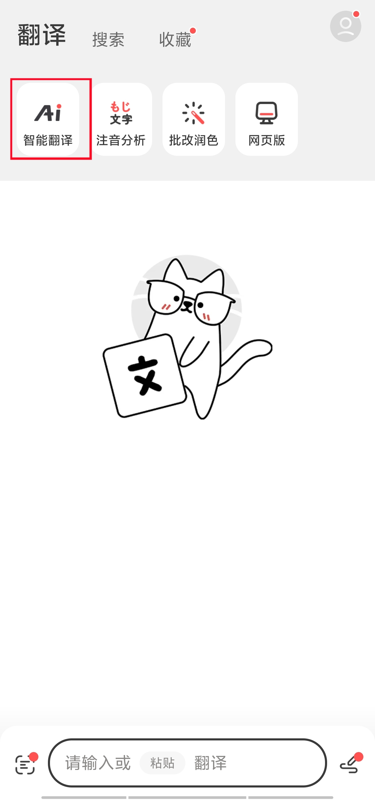
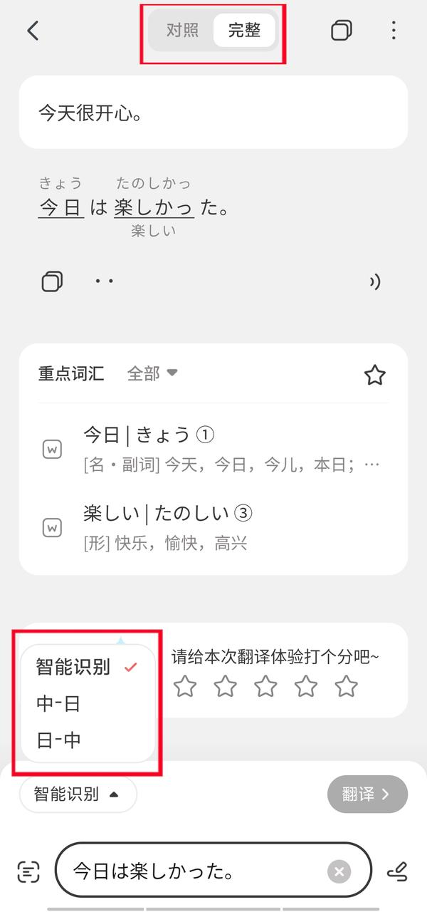
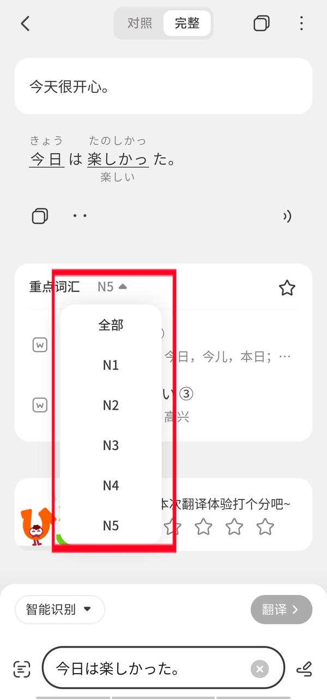
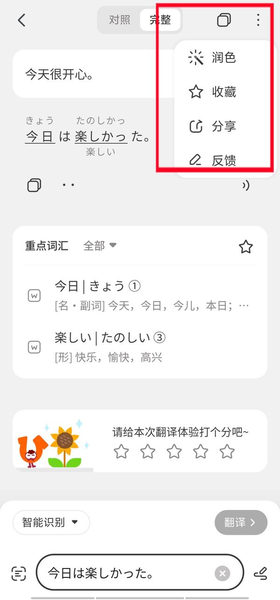
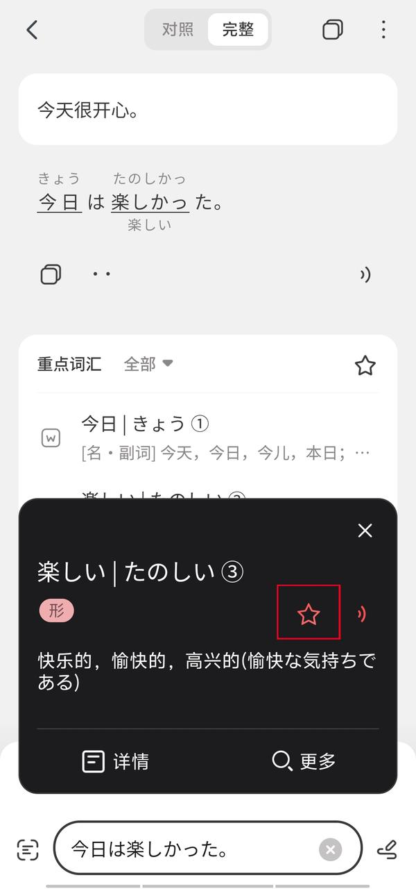
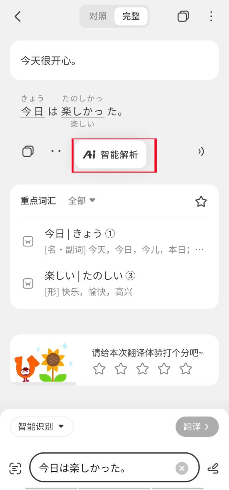
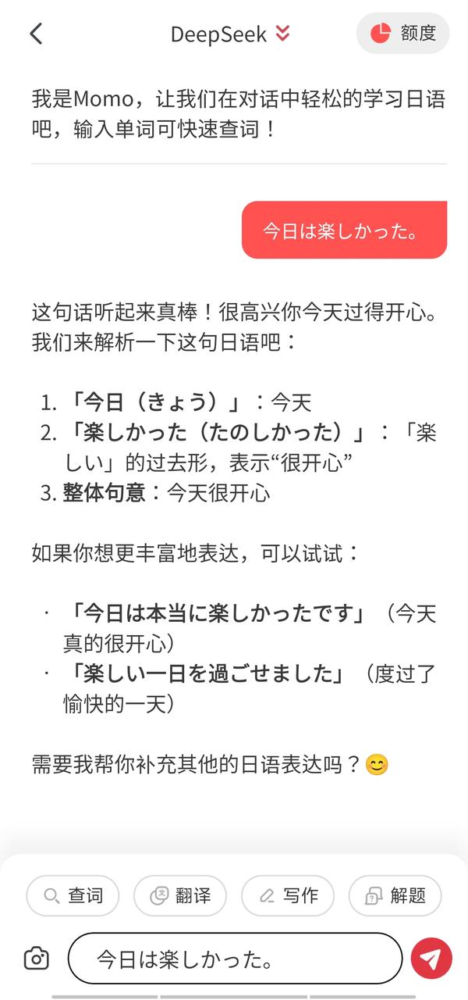
注音分析
长文注音 · 点词查词 · 预置阅读源
📍 入口：首页顶部「翻译」Tab→注音分析/搜索页金刚区「注音分析」
- 输入方式输入或粘贴任意日语句子/网页链接，一键标注假名读音；自动标记动词原形
- 预置阅读源中国国際放送局 / 人民網日本語版 / アニメ！アニメ！等常用日语阅读源一键直达
- 点词查词注音后可点击任意词汇直接跳转查词收藏
- 底部跳转跳转MOJi阅读，支持解析epub/txt文件
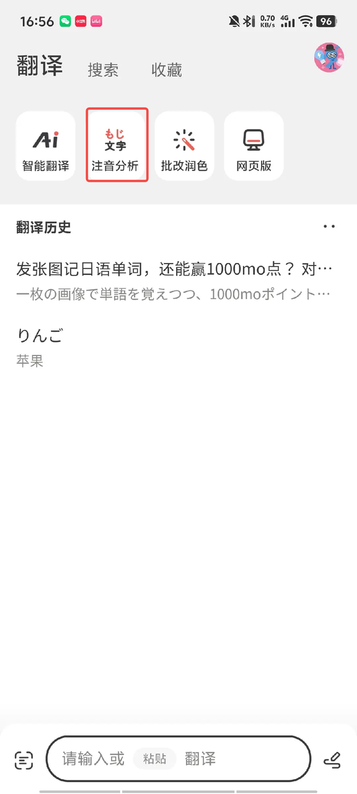

批改润色
场景化AI批改 · 语气/学习/商务三类
📍 入口：首页顶部「翻译」Tab→批改润色/搜索页金刚区「批改润色」
- 场景选择
- 语气：日常 / 敬语
- 学习：论文 / 志望书 / 高考作文
- 商务：邮件 / 演讲稿
- 额度右上角「额度」查看剩余AI批改次数
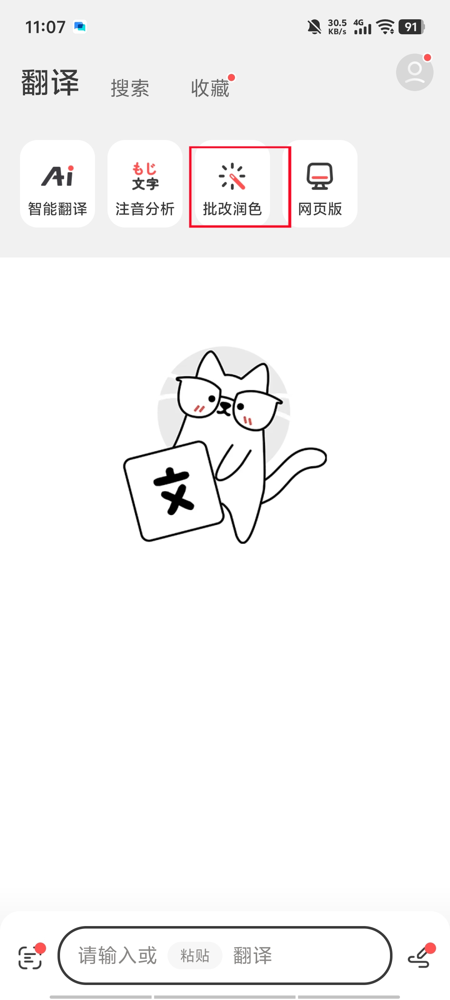
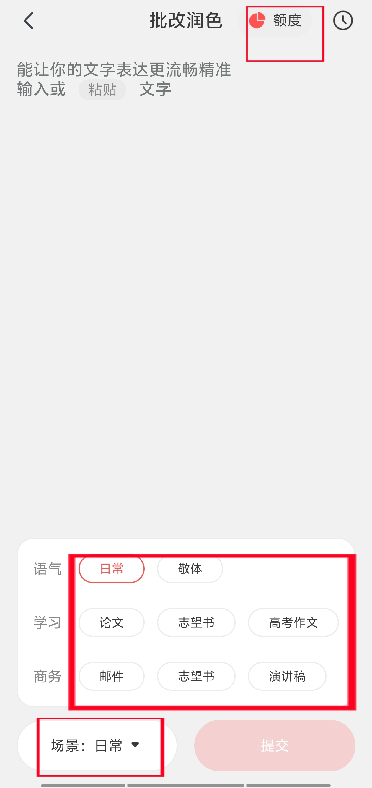
网页版
跳转MOJi翻译网页版
📍 入口：首页顶部「翻译」Tab→网页版
- 功能说明跳转MOJi翻译网页版（https://www.mojidict.com），适合网页端长文翻译场景
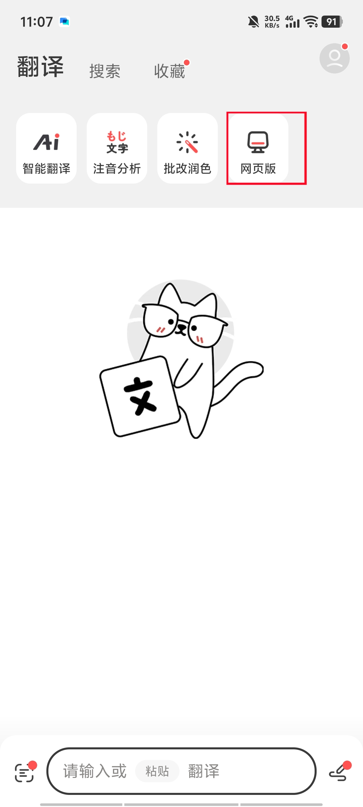
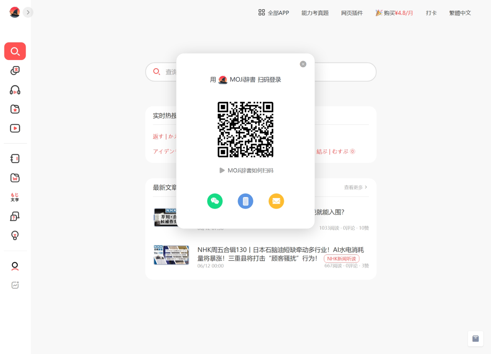
搜索页
搜索
多输入方式 · 浏览历史 · 实时热搜
📍 入口：首页顶部「搜索」Tab（默认页）
- 搜索页内容单词以及语法功能；实时热搜；系统学习内容
- 底部对话框直接搜索，左侧拍照扫描，右侧支持手写
- 搜索方式支持汉字、平假名、片假名、罗马音、中文关键词、混合输入；自动识别输入类型；支持拍照识别（OCR）
- 搜索页内容（详细）浏览历史（最近查词记录，右上角「···」可清除）；实时热搜（平台热门查词排行）
- 底部搜索栏左侧小组件图标（跳转桌面小组件设置）/ 右侧扫一扫图标（OCR拍照识别）
- 键盘快捷键平板/电脑：1/2/3/4选选项，P播放发音，Q认识/W模糊/E忘记，上下箭头切换词条，Delete标记已掌握
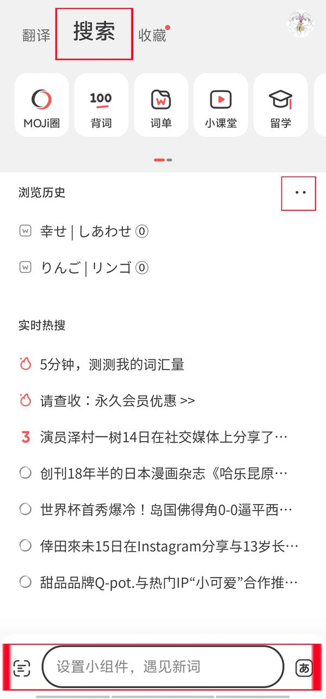
词条详情
深度词条 · AI简明释义 · 关联词 · 评论
📍 入口：搜索结果→点击任意词条
- 下滑可查看释义、关联词、原声例句、真题
- 顶部信息词条条目 + 读音 + 声调 + 词类标签 + 词源（仅外来语） + JLPT等级标签（N5-N1）；词条配音及声优朗读设置（点击小头像进入）
- 简明释义AI生成，一行简洁中文释义
- 释义中、日文释义；语法词条额外显示中、日文使用语境及接续；支持「自定义」释义与例句
- 关联词近义词 / 反义词 / 话题词（AI生成）
- 评论区用户评论、助记、造句；右下角数字显示评论数
- 操作按钮底部：笔记 / 评论数 / 收藏；右上角：TV图标（折叠/展开详情）/ 「···」更多操作
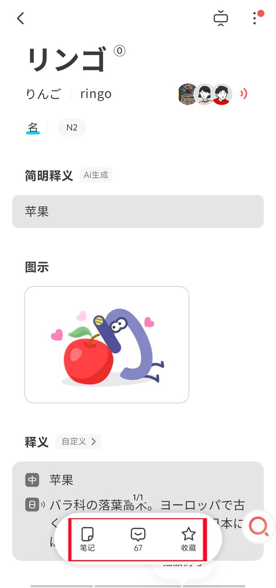
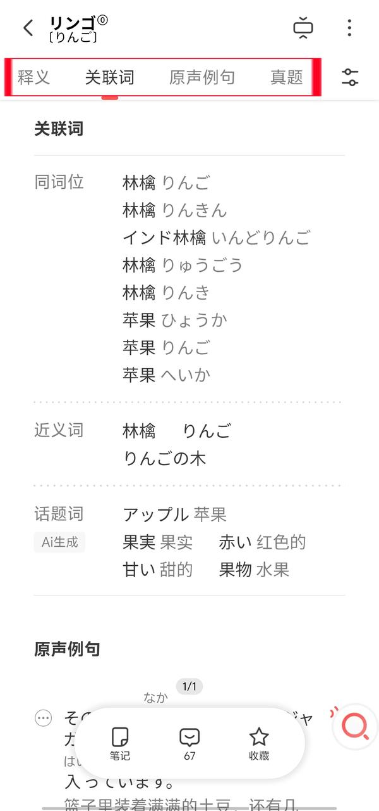
MOJi圈
日语学习者社区 · 互动交流
📍 入口：首页功能区「MOJi圈」
- 顶部在线人数实时显示当前在线船友数量及状态文案，文案内容动态变化
- 顶部功能入口横向滑动功能卡片：玩游戏「消消乐」/ 词汇水平「去评估」/ 日语人格「去测试」/ 影子跟读 等，各功能卡片可直接跳转对应模块
- 标签列表推荐 / NOW / 在日见闻 / 日语学习 / 日常打卡 / 磨磨叽叽 / 小课堂 / イベント / ドラマ / アニメ / 消消乐
- 社区发帖选择圈子标签发布图文内容，与学习者互动
- 点赞评论对帖子点赞、发表评论，评论区支持发送图片
- 船友榜TOP50月度用户贡献排行榜，每小时更新，以贡献内容数和获赞收藏数综合计算
- 底部导航栏首页 / 喜欢 / 发帖（红色「+」按钮）/ 通知 / 我的
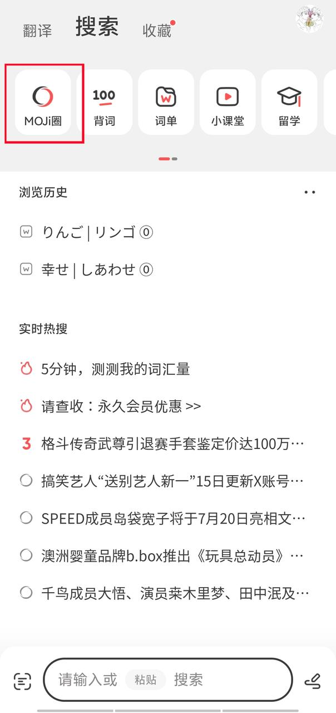
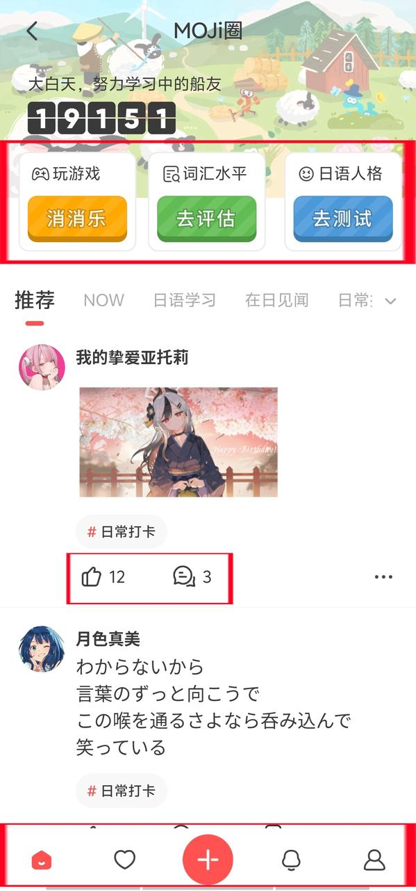
词单
浏览公开词单 · 收藏使用 · 自建发布
📍 入口：搜索页顶部快捷栏「词单」·收藏Tab顶部「词单」
- 词单列表按分类标签浏览：教材 / 考级 / 生活 / 行业 / 娱乐 / 基础 / 其他；每条显示封面图、名称、创建者、内容数量、简介
- 词单详情未收藏显示「收藏」按钮，收藏后解锁操作栏：听单词 / 背词 / 单词导出 / 回顾 / 评论；右上角 ··· 菜单：分享词单 / 取消收藏
- 筛选排序内容类型：全部 / 单词 / 例句 / 词单 / 其他；排序：作者指定排序 / 最新收藏 / 最早收藏 / 数据类型 / 拼写
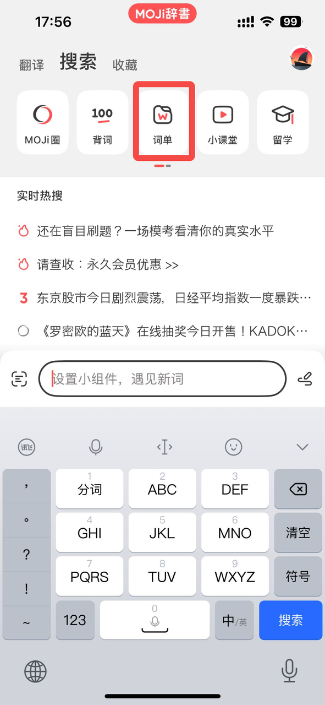
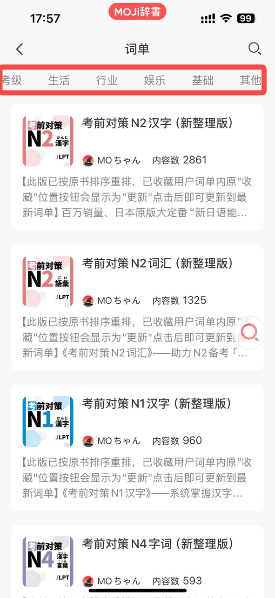
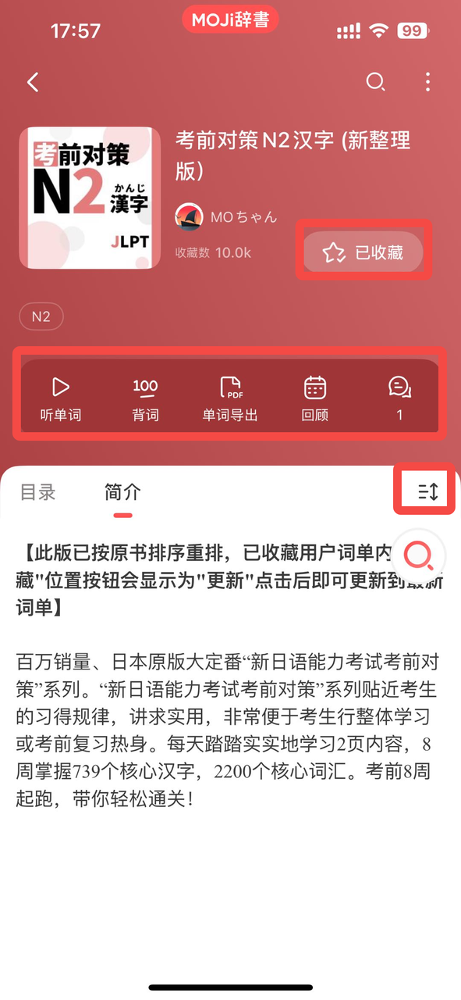
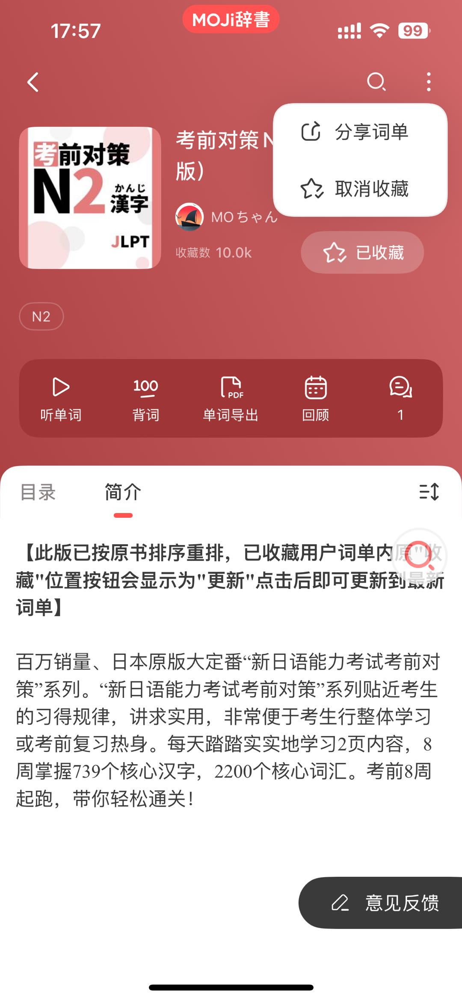
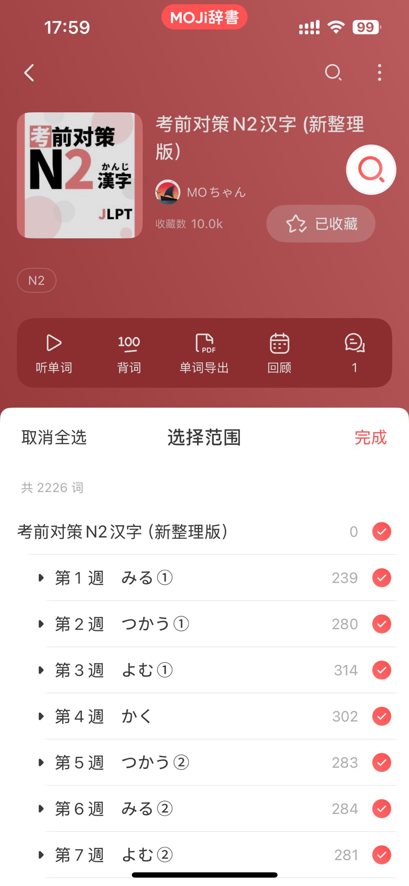
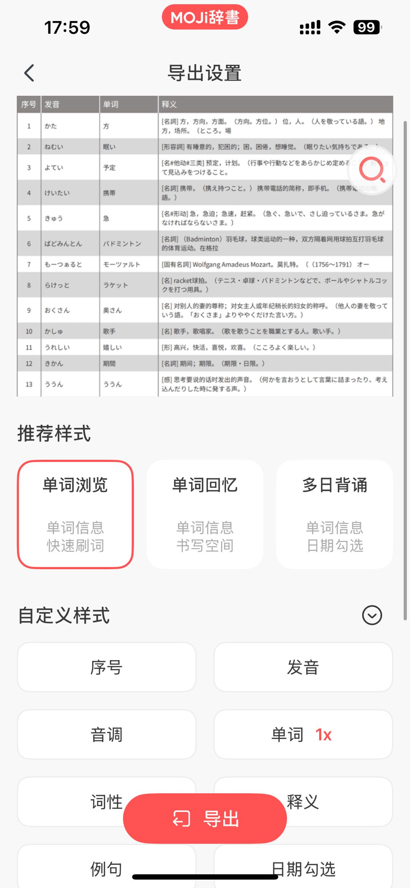
小课堂
付费课程平台入口
📍 入口：首页功能区「小课堂」
- 功能说明点击跳转MOJi小课堂独立课程平台，详见左侧导航「MOJi小课堂」
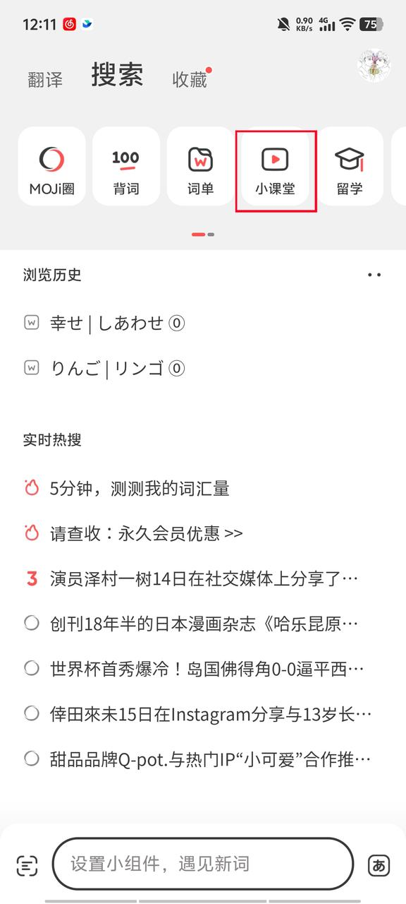
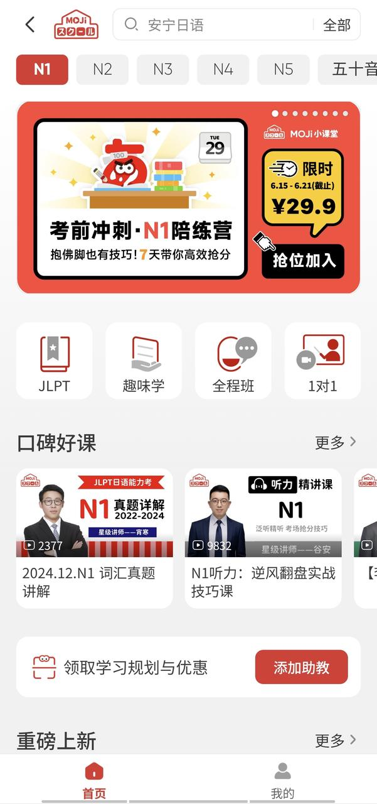
听读
MOJi阅读联动入口
📍 入口：首页功能区「听读」
- 功能说明将MOJi阅读的听读内容快捷入口放置在辞書首页，实现跨产品联动；需在设置中开启MOJi阅读功能后显示
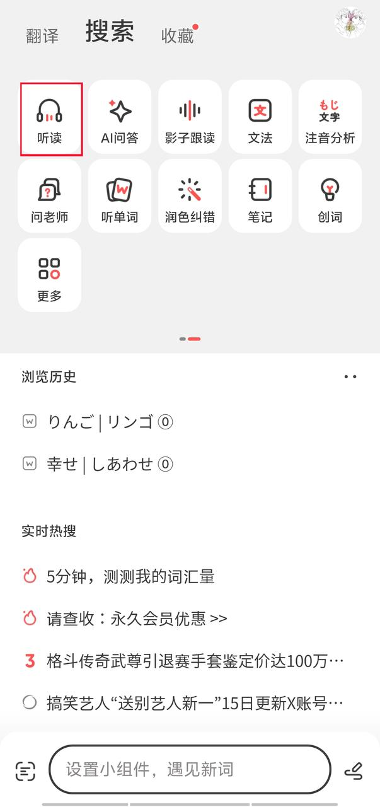
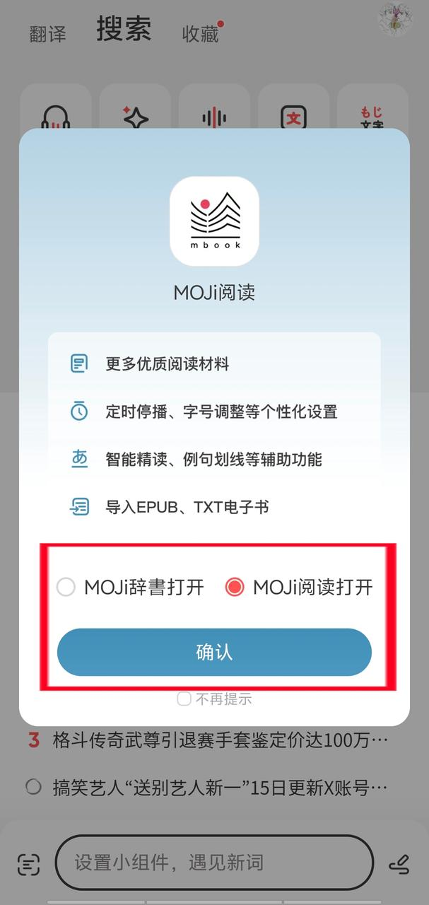
留学
赴日留学全链路服务
📍 入口：首页功能区「留学」
- 留学情报日本留学政策、院校资讯、申请时间线等信息汇聚
- 留学测评五道题。学历、日语水平、英文成绩、EJU预估、留学预算。一键生成测评结果。
- 时间规划八道题。学历、日语、英文、擅长科目，什么时候出发、怎么赴日、怎么申请学校。一键生成时间规划报告。
- 留学咨询跳转微信添加留学顾问，1v1解答留学相关问题
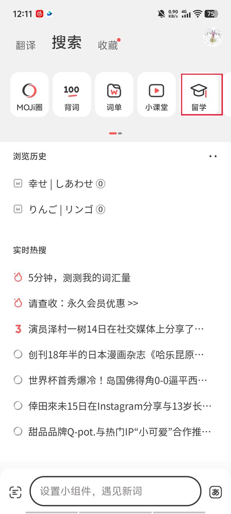
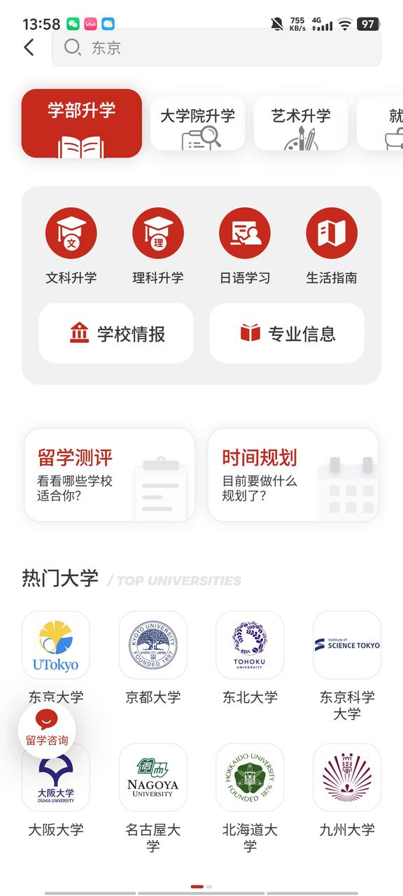
AI问答
DeepSeek驱动 · 查词联动 · 多场景快捷指令
📍 入口：首页功能区「AI问答」/词条详情页直接跳转
- AI模型当前使用DeepSeek驱动（顶部可点击切换模型）；右上角「额度」查看剩余次数
- 查词联动从词条详情页跳入时，自动携带查词上下文；页面顶部保留当前查词及简明释义，可针对该词直接追问
- 快捷指令输入框上方横向滑动：查词 / 翻译 / 写作 / 解题 / 会话，一键切换问答模式
- 图片输入输入框左侧相机图标支持拍照或上传图片提问，适合对着教材/试卷/截图直接问AI
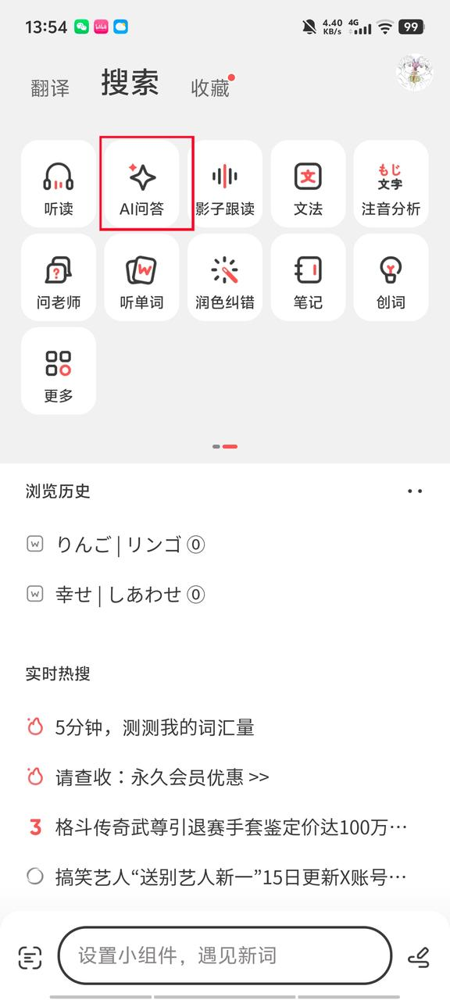
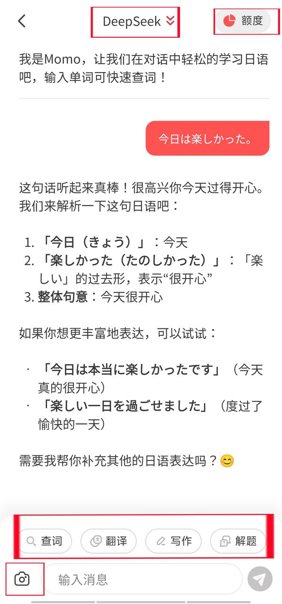
影子跟读
每日打卡 · 真人发音 · 多场景语料
📍 入口：首页功能区「影子跟读」
- 每日打卡句每天推送一条日语例句（含中文翻译），按住麦克风录音跟读；显示当日已打卡人数；右上角时钟图标查看历史
- 词单分类考级（NHK真人发音精选）/ 文学（夜读/晨读精选）/ 日剧（热门台词）/ ACG（动漫游戏）/ 其他
- 词单详情每词单100+条；可收藏词单；逐条跟读练习，配合真人发音音频
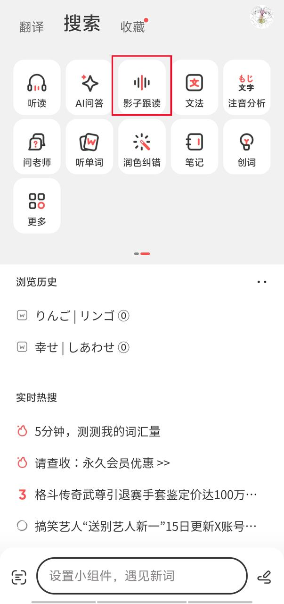
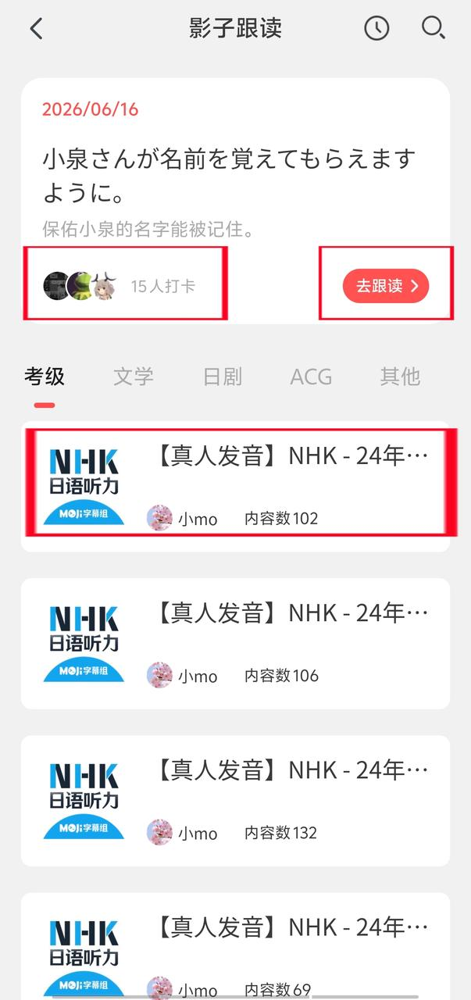
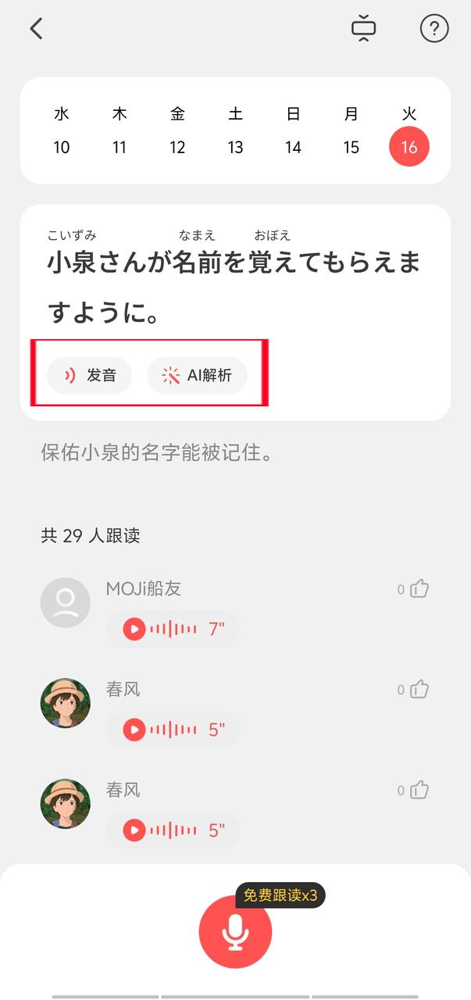
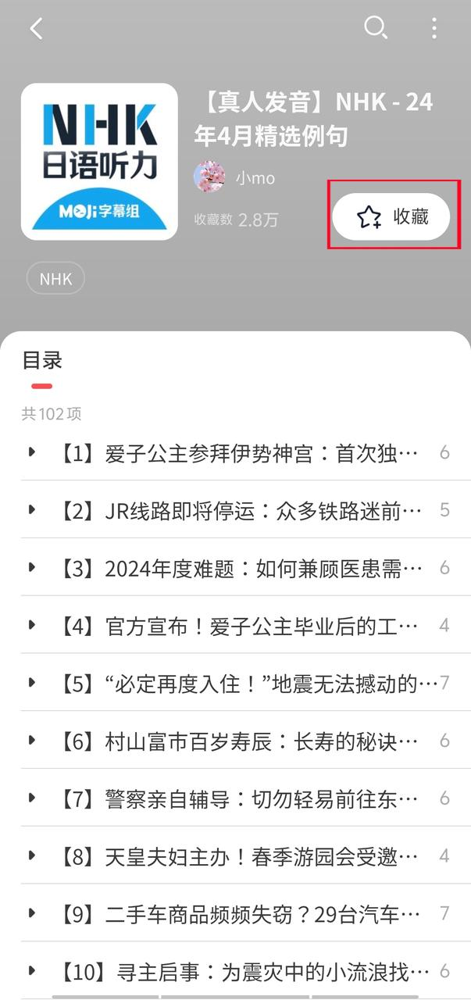
文法
N1–N5语法词单 · 用户共建 · 配套背词
📍 入口：首页功能区「文法」
- 语法词单库按N1-N5分级，汇聚官方和用户共建语法词单；热门词单如「N1语法收录」已达11,000+收藏
- 词单操作背词 / 听词 / 单词导出PDF / 回顾；可收藏词单加入学习计划
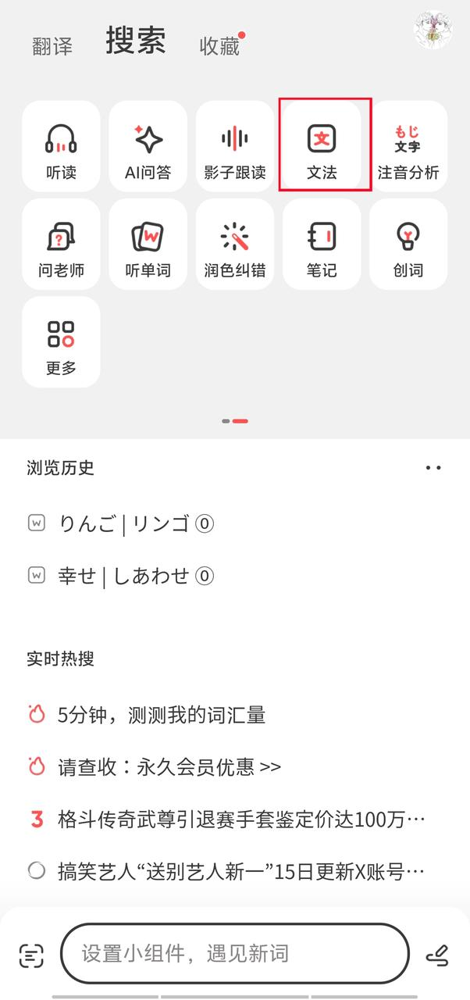
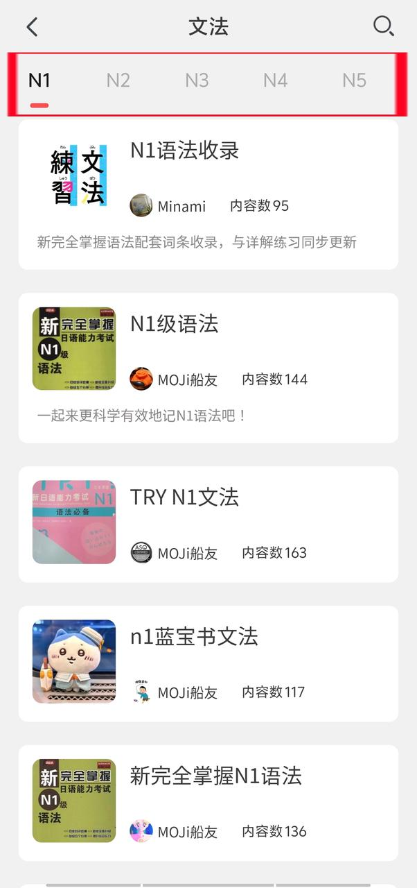
自创
自创词条 · 语法 · 例句 · 投稿MOJi词库
📍 入口：首页功能区「自创」（默认在「更多」中）
- 单词Tab填写：单词拼写 / 平假名 / 罗马音（自动生成）/ 音调（选填）/ 词类·活用型 / 中文或日文释义（至少填1种）/ 词条来源网址；选择保存至「我的收藏」；设置公有/私有；同意《MOJi平台公约》后「创建」，通过审核收录至MOJi词库
- 语法Tab填写自创语法条目，格式与单词Tab类似
- 例句Tab · 单个添加填写原文（日语）+ 翻译（中文），各限200字；「创建并收藏」
- 例句Tab · 批量添加用#区分原文和翻译，换行符区分每条例句，最多100条；点击「拆分」预览
- PC端推荐右上角PC图标弹出提示，复杂编辑推荐前往 https://www.mojidict.com/creation/word
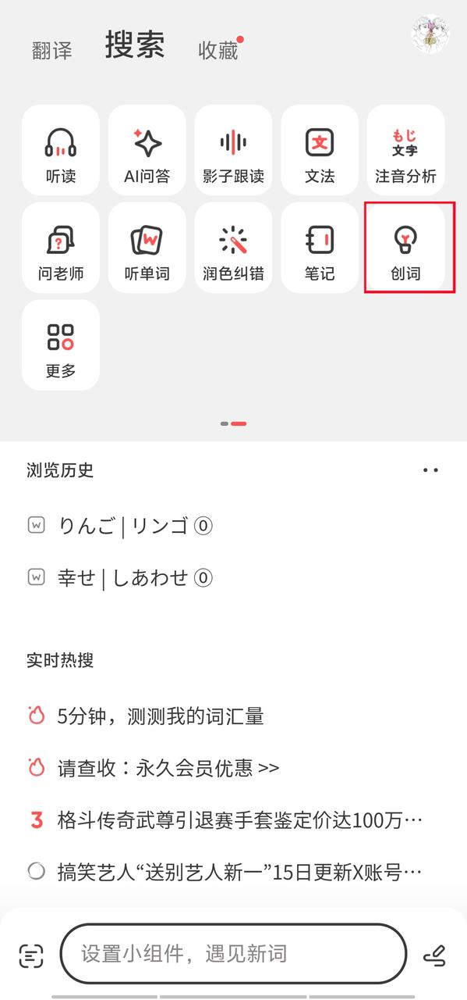
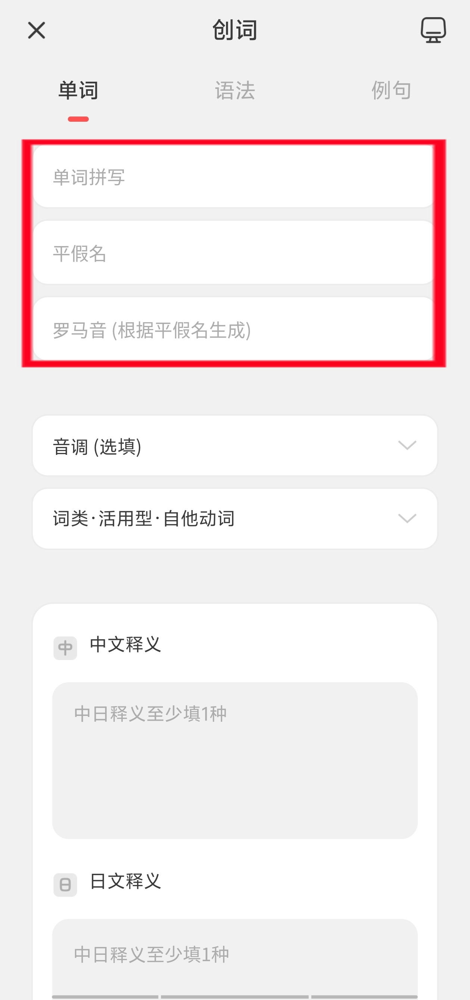
问老师
用户提问社区 · 热门/精选/贡献榜 · MO点奖励
📍 入口：首页功能区「问老师」（默认在「更多」中）
- 问答首页热门 / 小编精选 / 贡献榜三个Tab；「大家在搜」展示热门问题；右上角红色「提问」按钮
- 问题列表每条显示问题内容 + 围观人数 + 浏览数 + 回答数 + 状态（等待回答/已回答）
- MO点奖励提供优质回答可获得MO点奖励
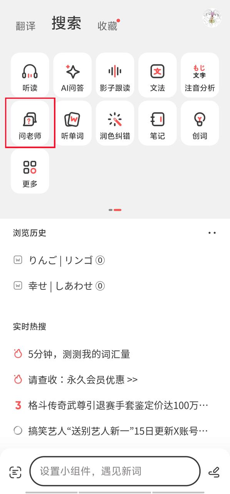
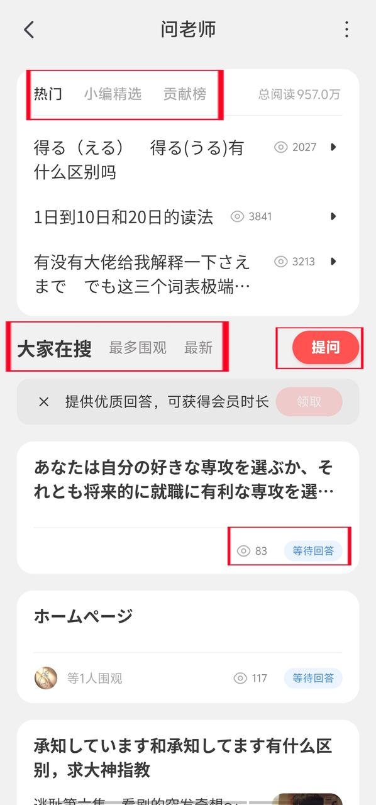
收藏页
收藏主页
词汇收藏管理 · 筛选排序 · 快捷功能区
📍 入口：首页顶部「收藏」Tab
- 收藏列表按时间分组显示（昨天/近一周/月份），每条显示词单封面+词单名称+收藏星标；底部「查找收藏内容」搜索栏
- 顶部快捷入口收藏夹、词单、听词、背词、单词导出、回顾、笔记
- 新建、排序、批量管理圆形「+」，搜索内容、新建收藏夹、笔记、自创；筛选（全部/单词/例句/词单/其他）；批量管理（删除、移动收藏夹）
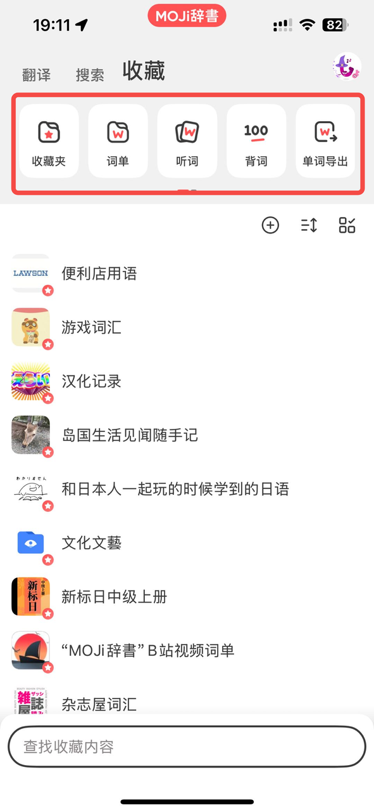
创建词单
自建词单 · 添加章节与内容 · 发布共享
📍 入口：收藏页「+」→ 自创
- 创建填写标题和简介后点击「创建词单」
- 编辑目录点击「+」可添加章节、添加内容、创建笔记
- 管理单词勾选后可删除或移动到指定章节 / 收藏夹
- 发布点击「发布」填写词单类目、定价（默认免费），同意《MOJi创作协议》后确认发布；发布后其他用户可搜索并收藏
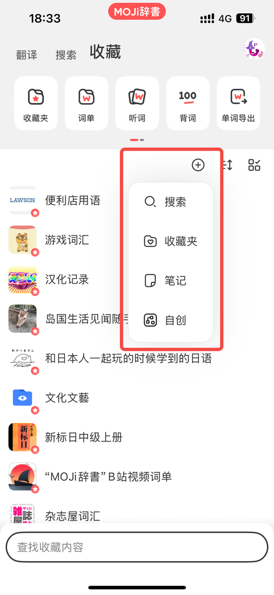
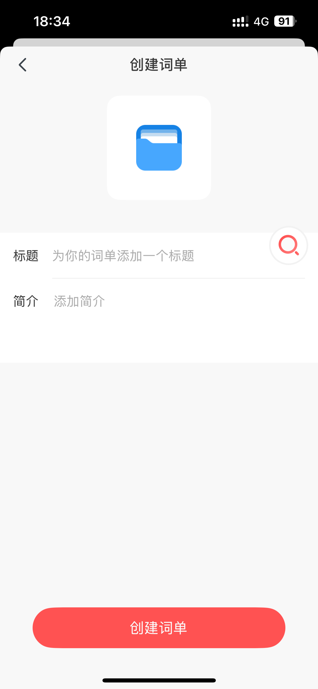
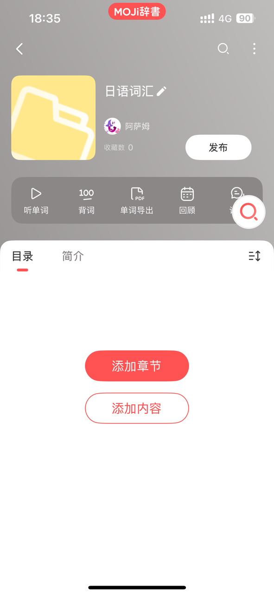
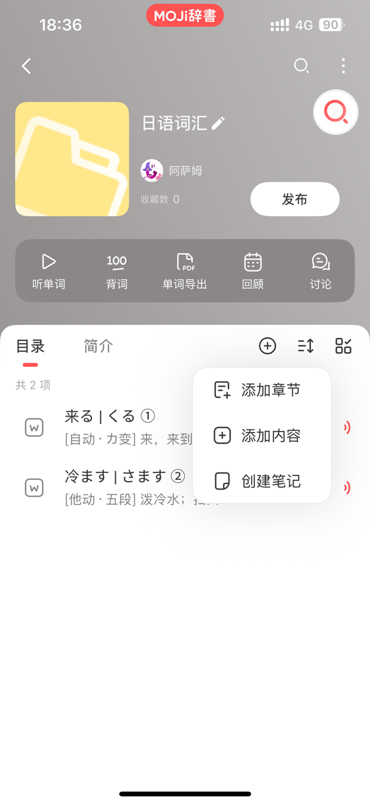
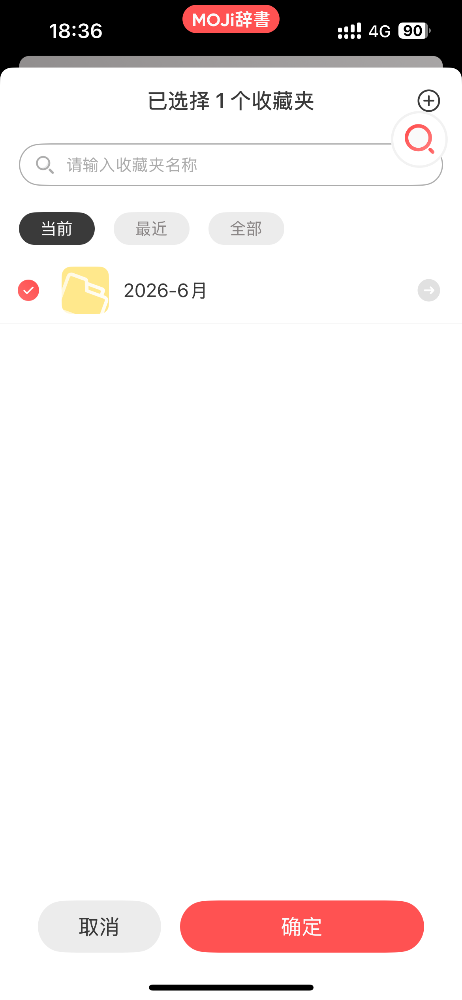
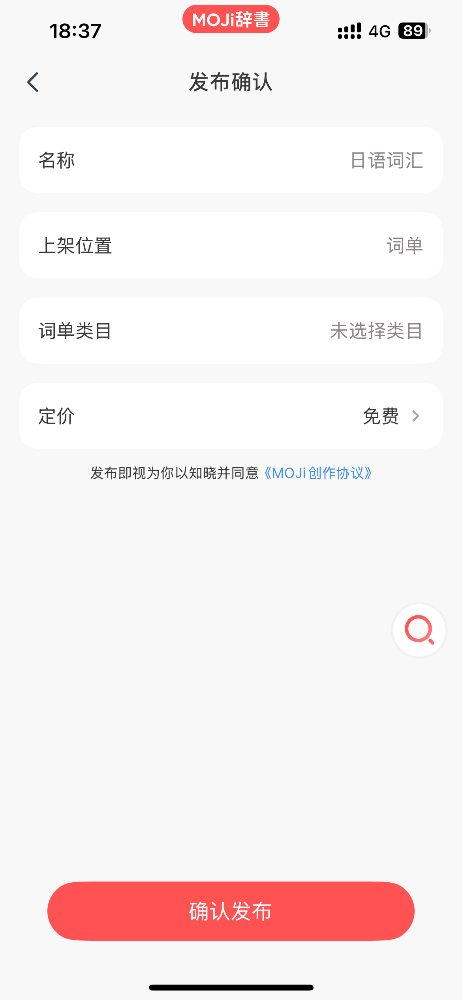
收藏夹
创建收藏夹 · 分类管理词单
📍 入口：收藏Tab顶部「收藏夹」
- 收藏夹列表显示用户创建的所有收藏夹，支持搜索（6万＋词单可搜索）；分「我收藏的 / 我创建的 / 我发布的」三个子tab
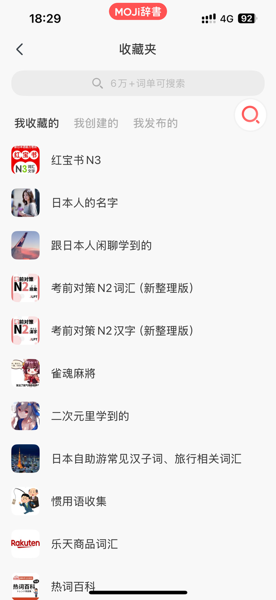
听词
收藏词单朗读 · 卡片/列表模式
📍 入口：收藏Tab顶部「听词」
- 功能说明选择任意收藏词单，以卡片形式逐词朗读；顶部下拉可切换词单；卡片显示日文大字+假名注音+词性标签+中文释义；底部：设置/暂停/评论；支持卡片/列表视图切换；进度显示（如1/18）；「详细释义」跳转完整词条
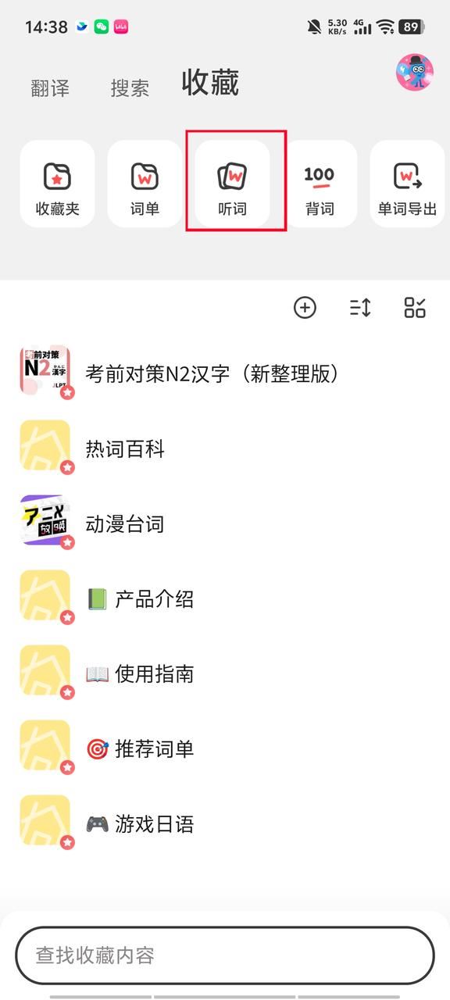
背词
选择测试模式进行自测
📍 入口：收藏Tab顶部「背词」
- 功能说明点击收藏页背词，选择收藏单词测试范围；选择快速模式-快速自测、专业模式-创建背词计划
单词导出
词单导出PDF · 自定义样式
📍 入口：收藏Tab顶部「单词导出」·词单详情页操作栏「单词导出」
- 选择范围按章节勾选，支持展开逐条选择
- 推荐样式单词浏览（单词信息＋快速刷词）/ 单词回忆（单词信息＋书写空间）/ 多日背诵（单词信息＋日期勾选）
- 自定义字段序号、发音、音调、单词（可设重复次数）、词性、释义、例句、日期勾选、词条笔记
- 纸张方向竖向 / 横向；点击「导出」生成PDF
笔记
助记 · 造句 · 记忆口诀
📍 入口：收藏Tab顶部「笔记」
- 功能说明在词条下写助记方法、造句、记忆口诀；收藏页统一管理，支持搜索；右下角「+」新建笔记
回顾
小组件推送 · 通知碎片复习
📍 入口：收藏Tab顶部「回顾」
- 小组件桌面添加MOJi小组件，每日显示待回顾词汇
- 应用通知可设置每天推送条数（默认每天6条），不打开App也能碎片复习；词单无词时默认推送热搜词汇
背词
背词首页
计划总览 · 今日数据 · 快捷功能
📍 入口：首页功能区「背词」
- 我的计划卡片词书封面 + 词书名 + 总词数 + 预计学完天数 + 掌握数/已学数 + 进度条；右上角「更多计划」进入完整计划列表；「学习列表」入口；右侧铅笔图标→背词设置；底部「复习 X」（白色）和「新学」（红色）按钮
- 底部快捷功能区修改计划（调整背词数量/题型/删除计划）；玩游戏（消消乐，黄色按钮）；词汇量测试（绿色「去测试」按钮）
- 今天学习数据今日学词数 + 累计学词 / 累计打卡 / 连续打卡（天数）；「打卡日历」入口
- 阅读复习生词底部推荐基于MOJi阅读中遇到的生词关联文章，实现辞書与阅读跨产品学习闭环
更多计划
全部计划管理 · 创建新计划
📍 入口：背词首页右上角「更多计划」
- 创建计划顶部「+ 创建计划」按钮→进入「选择背词内容」页面，分为官方推荐（标准日本语、红宝书、大家的日语、新编日语、考前对策、JLPT·考研·高考 背词做题）和我的收藏两个区域，均支持「更多」展开
- 计划列表每张卡片显示词书封面 + 词书名 + 总词数 + 预估学完天数 + 进度条 + 掌握数/已学数；当前学习中的计划显示「学习中」标签，其他计划显示红色「学习」按钮可切换
背词设置
题型配置 · 新学/复习分开设置
📍 入口：背词首页→词书卡片右侧「铅笔图标」
- 设置项计划名称 / 背词任务 / 题型设置 / 背词顺序
- 新学 Tab 测试题型选择题 / 回忆式 / 快速自测三选一。选择题可选「官方题型」（根据单词特性自动生成最佳3种）或「自选题型」：①通用（看单词选释义/看释义选单词）②重点考察（看假名选释义/看释义选假名/看单词选假名/看单词选错义/听发音选单词/听发音选释义）③进阶拼写（看释义拼单词/看单词拼假名/拼写例句）；快速自测显示部分可选（单词/单词+假名/假名/释义）+ 例句提示开关
- 复习 Tab题型配置与新学 Tab 相同
学习列表
未学习 · 复习中 · 已掌握 · 批量管理
📍 入口：背词首页→词书卡片「学习列表」
- 三个 Tab未学习（显示总词汇数，底部「听学」按钮）/ 复习中（额外显示绿色分数标签 + 蓝色周期标签）/ 已掌握（均显示100分标签）
- 批量管理各 Tab 右上角「···」→批量管理→选择【已掌握 / 重学】；选择全书重学时，确认按钮有倒计时防误触
新学
词汇列表 · 学习 · 测试
📍 入口：背词首页→词书卡片「新学」按钮
- 词汇列表展示本次新学词汇；每条显示单词 + 假名 + 声调 + 词性 + 简明释义 + 发音按钮；左上角「全部▾」切换显示方式（全部/音标/拼写/拼写与音标/解释）
- 听词（红色）进入听词界面，按背词顺序朗读本次新学词汇
- 测试（灰色）题型由背词设置决定：选择题（四选一）/ 回忆式（点击翻面，自判认识/模糊/忘记）/ 快速自测（逐条翻面，完成后提交）；右上角「···」：收藏/掌握/帮助/设置/错误反馈
复习
复习列表 · 筛选排序 · 多选管理
📍 入口：背词首页→词书卡片「复习 X」按钮
- 复习列表展示待复习词汇；每条显示单词 + 假名 + 声调 + 词性 + 简明释义 + 绿色分数标签 + 蓝色周期标签 + 发音按钮；底部「听词」（红色）和「X 复习」（灰色）
- 显示方式切换左上角「全部▾」：切换全部/音标/拼写/拼写与音标/解释
- 筛选右上角漏斗：排序（新学日期/单词分数）/ 按新学时间批次选择 / 按分数区间过滤（0-20/21-40/41-60…）
- 批量管理右上角色块→勾选单词→已掌握/重选
听词
卡片/列表模式 · 播放设置 · 遮挡 · 详细释义 · 评论
📍 入口：新学「听词」·复习「听词」·学习列表「听学」·收藏「听词」
- 卡片模式单词卡片逐词朗读；显示日文大字 + 假名注音 + 词性标签 + 简明释义 + 例句；顶部声优胶囊（如「七海 朗读」）可点击切换声优；进度显示；右下角切换「列表」视图
- 列表模式灰色背景滚动列表，多词同屏显示，当前播放词居中高亮；右下角切换「卡片」视图
- 播放设置顺序（顺序/随机）/ 倍速 / 间隔；定时关闭 / 循环设置 / 发音设置；播放词条解释（开关）/ 播放例句（日语/中文独立勾选）
- 遮挡功能点击眼睛图标→遮挡全部 / 遮挡释义例句 / 遮挡单词
- 其他点击「详细释义 →」跳转词条详情页；点击气泡框查看/发布评论；底部左侧列表图标弹出完整词汇列表，可跳转任意词条
打卡日历
学习记录 · 回顾与预测 · 每日提醒
📍 入口：背词首页→今天学习数据区「打卡日历」
- 顶部状态栏累计天数 / 连续天数 / 累计学时；未完成时显示「去背词」红色按钮
- 日历视图月历展示；内圈=新学完成，外圈=复习完成，浅色=当天未完成；可按月翻页
- 回顾与预测周/月/年切换柱状图；蓝色柱=预估复习量，绿色柱=计划新学量；底部：计划新学词数/预估复习词数/预估时长
- 每日提醒开关控制，开启后按时推送背词提醒
- 每日回顾小组件跳转桌面小组件设置，一键查看当日背词任务
累计学词
复习中 · 已掌握 · 全量词汇管理
📍 入口：打卡日历→「累计学词 X词」
- 复习中 Tab所有仍在复习周期中的词汇；显示单词 + 假名 + 绿色分数标签 + 蓝色周期标签 + 词性释义 + 发音；支持筛选和多选管理
- 已掌握 Tab已完成7个复习周期的词汇；显示单词 + 假名 + 100分标签 + 词性释义；支持筛选和多选管理
趣味游戏/测试
消消乐
单词/50音模式 · 辞書与MOJiKana联通
📍 入口：背词首页→快捷功能区「玩游戏·消消乐」、MOJi圈→顶部功能区「玩游戏·消消乐」
- 模式切换右上角按钮切换：单词消消乐（辞書词汇，辞書默认）/ 50音消消乐（假名练习，MOJiKana默认）；两款App共用同一游戏界面
词汇水平测试
5分钟评估 · N5-N1分级 · 历史记录
📍 入口：背词首页→快捷功能区「词汇量测试」、MOJi圈→顶部功能区「词汇水平·去评估」
- 测试说明5分钟快速评估日语词汇水平；科学题库结构与动态出题逻辑；一键生成五维图学习报告
- 历史记录右上角「历史记录」查看历次结果；页面顶部显示当前等级
日语人格测试
3分钟测出你的日语学习人格 · 趣味鉴定
📍 入口：MOJi圈→顶部功能区「日语人格·去测试」
- 入口页主视觉「你是哪种日语人格？」；四类型预览（同人文学 / 番剧日音 / 教材刷题 / 游戏文本）；底部黄色「开始鉴定」按钮；标注「3分钟测出你的日语学习人格」
- 测试问答若干道选择题判定用户日语学习偏好，根据答题结果输出人格类型，共8种人格
- 结果页·人格卡中央人格插画 + 英文人格名 + 中文人格名；橙色短描述；「扎心鉴定」长文描述学习驱动力/词汇分布/行为特征，语言风格幽默网感强
- 属性标签与雷达图5-6个黄色标签描述人格特质；条状评分图展示7项属性数值（正统做题/厨力/社交牛/卷王度/网感/社畜/哑巴度），各项0-100分
- 引流与分享对应人格内容包可「免费领取」；黄色「喊搭子来测！」分享按钮；「再测一次」链接
我的
我的中心
会员 · 钱包 · 学习目标 · 快捷工具
📍 入口：首页右上角头像
- 订阅会员显示到期时间，一键续费；VIP标识显示
- 钱包MO币余额 + 优惠券数量
- 学习目标可设置目标等级（如N3）；显示连续打卡天数和本周打卡日历
- 快捷工具我的自创 / 小组件 / 每日回顾 / 兑换码 / MO币商店 / 语言切换 / 帮助与反馈 / 关注我们
- 发现MOJi底部展示平台活动推荐内容（词汇量测试/会员优惠/1v1定制课等）
个人主页
公开展示 · MOJi圈 · 跟读 · 助记
📍 入口：我的中心→「个人主页」按钮
- 基本信息头像 / 昵称 / UID / 关注数 / 粉丝数 / 获赞收藏数；右上角「最近来访」查看今日访客
- 三个TabMOJi圈（发布的帖子）/ 跟读（跟读过的词条列表，可播放）/ 助记（为词条写的助记内容）
桌面小组件
背词进度 · 每日回顾 · 快捷入口
📍 入口：我的中心→「小组件」/搜索页底部搜索栏左侧图标
- 背词进度展示背词进度百分比和剩余单词数；点击跳转背词计划；样式可选：黑白纯色/机能风黑红/机能风紫绿（付费8元解锁机能风）
- 每日回顾随机展示收藏词汇，碎片时间记忆单词；样式可选：黑白纯色/自定义背景/机能风主题；底部「设置回顾范围」入口
- 快捷入口一键跳转功能（听读/收藏/背词/搜索），节省打开App时间；两种样式：快捷方式1（4格图标）/ 快捷方式2（含翻译/打开链接）
消息
赞 · 收藏 · @我 · 系统通知
📍 入口：我的中心→顶部铃铛图标
- 四个分类赞 / 收藏 / @我 / 系统通知；顶部提示「打开通知，接收消息推送」
- 消息列表显示互动用户头像+昵称+互动内容摘要+时间；支持回复和点赞
设置
账号 · 功能 · 系统
📍 入口：我的中心→右上角设置图标
- 账号与安全账号管理；服务号绑定（绑定微信服务号）
- 功能设置发音（声优偏好）/ 主题（5种主题色）/ 功能区定制 / 悬浮窗 / 高阶玩法
- 系统设置注音模式（假名/罗马音切换）/ 常亮模式（背词时屏幕不息屏）/ 清除缓存 / 个性化内容推荐开关 / 反馈
网页端
首页
首页
搜索框 · 系统学习 · 实时热搜 · 最新文章
📍 入口：mojidict.com
- 顶部导航栏全部APP / 能力考真题 / 网页插件 / 购买会员（¥4.8/月）/ 打卡 / 繁體中文切换
- 搜索框查询单词或文本，网页端核心入口
- 系统学习备考课程 / 1v1授课 / 赴日留学 / 更多，宫格入口
- 实时热搜展示当前热门检索词，部分词条附查询人数标记
- 最新文章展示听读板块最新发布文章，含标签、发布时间、阅读/评论/点赞数
搜索
搜索结果页
综合 · 文法 · 例句 · 翻译
📍 入口：首页搜索框输入→搜索结果页
- 分类Tab综合（默认）/ 文法 / 例句 / 翻译，切换查看不同维度结果
- 词条列表展示词头、假名、词性标签、中文释义摘要，点击进入详情页
- 翻译入口列表末尾提供「原词-翻译」快捷入口，含站内翻译与DeepL翻译两种
词条详情页
释义 · 例句 · 关联词
📍 入口：搜索结果列表→点击词条
- 词头信息汉字词头、假名读音、罗马音、发音朗读图标
- 操作栏词性 · JLPT等级标签；收藏 / 笔记 / 分享；更多菜单（反馈 / 举报 / 设置）
- 简明释义AI生成的一句话中文概括释义
- 释义与例句中日对照展示，支持展开查看全部释义与例句
- 关联词多音词（同汉字不同读法）、近义词横向列表，点击可跳转
翻译
翻译
中日互译 · 词汇收集 · 历史记录
📍 入口：左侧导航「翻译」
- 语言切换中文⇄日语一键互换，单次翻译限1000字
- 词汇收集右侧栏收集翻译过程中的生词，可批量操作
- 历史记录查看过往翻译记录
- 收藏与折叠翻译结果可收藏；右侧栏可折叠收起，扩大编辑区
听读
栏目列表
订阅栏目 · 分类导航
📍 入口：左侧导航「听读」
- 我的订阅展示已订阅栏目，置顶显示
- 栏目导航NHK新闻听读 / NHK简易新闻 / 每日一练 / 翻译备考 / 社会新语 / 早安日语 / MOJi会话 / 杂志屋 / 昔话百选 / MOJi百科 等
- 顶部功能搜索文章、消息通知入口
文章列表页
标题 · 标签 · 互动数据
📍 入口：栏目列表→选择栏目
- 文章卡片标题、配图（右侧缩略图）、发布时间
- 标签部分文章标记「VIP翻译」等付费/权益标签
- 互动数据阅读数 · 评论数 · 点赞数
- 订阅入口栏目页顶部展示订阅人数与订阅按钮
文章详情页
音频播放 · 译文对照 · 重点词汇
📍 入口：文章列表→点击文章
- 音频播放器支持循环/不循环切换；倍速可选0.6/0.8/1.0/1.2/1.4
- 译文显示三种模式：显示译文 / 点击显示译文 / 隐藏译文，可随时切换
- 重点词汇文末汇总本篇重点词汇卡片，含词性与释义，点击可查看更多
- 上下篇切换文末提供「上一篇」「下一篇」快捷导航
- 互动操作阅读数展示；点赞 / 收藏 / 分享
- 推荐区热门文章 / 最新发布 Tab切换；专栏推荐横向卡片（文化之旅、视频推荐等）
收藏
收藏夹列表
新建 · 管理 · 筛选
📍 入口：左侧导航「收藏」
- 排序方式默认按「最新收藏」排序，可切换
- 新建收藏夹顶部＋图标，创建自定义收藏夹
- 管理收藏夹顶部宫格图标，进入批量管理模式
- 筛选全部分类下拉 + 选择过滤下拉，缩小查看范围
- 收藏夹卡片展示封面图与名称，点击进入详情
新建文件夹弹窗
封面 · 名称 · 标签 · 简介
📍 入口：收藏夹列表→点击＋新建
- 封面上传支持选择本地JPG/PNG图片，提示「清晰的封面更易被推荐」
- 名称必填项
- 标签最多可选择5个标签
- 简介选填文本描述
- 操作确定 / 取消
管理模式
批量选择 · 移动 · 删除
📍 入口：收藏夹列表→点击管理图标
- 全选/取消顶部提供全选与取消操作，实时显示已选择数量
- 单项勾选每个收藏夹/词条前的圆形勾选框
- 底部操作栏移动、删除两个批量操作入口
小课堂
小课堂
课程分类 · 快捷入口 · 好课推荐
📍 入口：左侧导航「小课堂」
- 级别TabN1-N5 / 五十音 / 考研 / 其他
- 搜索顶部搜索框可直接搜课程
- 轮播Banner顶部大图轮播广告位，展示当期主推课程
- 功能宫格考前冲刺 / 语法 / 口语 / 阅读 / 词汇 / 小班课 / 真题 / 考研
- 快捷入口JLPT / 趣味学 / 全程班 / 1对1
- 最近在学展示用户当前学习进度中的课程
- 口碑好课横向卡片展示高播放量课程，含讲师、播放数标签
笔记
笔记
分类 · 排序 · 空状态
📍 入口：左侧导航「笔记」
- 分类Tab词条 / 小课堂 / 其他
- 排序与视图按「最新」排序，支持切换视图样式
- 空状态无笔记时显示「暂无笔记」提示
词单
词单
分类 · 搜索 · 词单卡片
📍 入口：左侧导航「词单」
- 分类Tab全部 / 教材 / 考级 / 生活 / 行业 / 娱乐 / 基础 / 其他
- 搜索支持按词单名称搜索
- 词单卡片展示封面、名称、作者、内容数、收藏（星标）数、所属分类标签及简介摘要
分析
分析
文本标注 · 逐词释义 · PDF导出
📍 入口：左侧导航「分析」
- 输入文本支持粘贴或输入长段日语文本
- 逐词标注自动标注假名读音与中文简要释义，点击词汇可展开完整释义
- 显示设置可自定义标注显示样式
- PDF导出支持将标注结果导出为PDF
- 词汇收集侧栏右侧汇总本次分析涉及词汇，支持全选、收藏、删除
自创
单词
自建词条 · 释义例句
📍 入口：左侧导航「自创」（Tab：单词 / 语法 / 例句 / 网址）
- 基础信息单词拼写、平假名、罗马音（根据平假名自动生成）、音调（选填）、词类·活用型·自他动词、词条来源链接
- 释义与例句日文/中文释义、来源；支持＋添加更多释义或例句、＋例句
- 保存设置保存至指定收藏夹；公开/私有单选；需勾选同意MOJi平台公约及词条规范
语法
语法条目 · 中日释义对照
📍 入口：自创→语法Tab
- 基础信息语法条目、平假名
- 中文释义至少填1种；中文使用语境选填
- 日文释义至少填1种；日文使用语境、接续均选填
- 例句选填，支持＋添加更多释义、语境或例句
- 保存设置保存至指定收藏夹；公开/私有单选；需同意平台公约
例句
字幕识别 · 批量收藏
📍 入口：自创→例句Tab
- 句子录入格式选择「日语+换行+中文」；支持上传字幕文件后点击「识别」自动提取
- 格式说明用换行区分原文和翻译，用空行区分不同例句（页面附示例文本）
- 识别结果右侧展示识别出的例句列表，支持全选、删除、批量收藏
网址
导入网址 · 自动获取标题
📍 入口：自创→网址Tab
- 网址导入网址（必填）输入框，支持粘贴任意链接
- 标题必填，可点击「自动获取」按网址内容自动填充
- 简介与封面简介文本框（选填）；上传封面图（选填）
- 保存底部保存按钮提交
我的
我的
个人信息 · 数据统计 · 内容展示
📍 入口：左侧导航「我的」
- 顶部Tab个人信息 / 功能设置 / 系统设置
- 个人信息卡片头像、昵称、个性签名，右侧「编辑资料」入口
- 数据统计共享 / 收藏 / 关注 / 粉丝，各项数量实时展示
- 内容网格按选中Tab（如「收藏」）展示对应内容卡片列表
- 退出登录页面右上角退出登录入口
使用场景
日常查词
- 遇到不认识的单词，精准搜索第一条即命中
- 查看动词活用、近反义词加深理解
- 一键收藏生词，自动进入复习计划
系统背词
- 选择官方或用户共建词单
- 选择题型，按艾宾浩斯曲线规划复习
- 桌面小组件/单词推送碎片化强化
阅读辅助
- 粘贴长文或网页，一键注音分析
- 点击不认识的词直接跳转查词
- 收藏好句，反复查看加深印象
语法疑问
- 遇到查词解释不清楚的用法
- 直接向AI问答提问，获取详细解释
- 支持追问，深度理解语法细节
MOJi小课堂
课程学习平台
MOJi旗下独立课程平台（MOJi スクール），汇聚一线名师，提供JLPT备考、趣味日语、全程班、1v1定制等多类型课程（含免费与付费），支持直播+录播双模式学习。
APP端
首页
首页
课程发现 · 等级筛选 · 快捷入口
📍 入口：辞書首页功能区「小课堂」
- 顶部MOJi スクール Logo + 搜索框 + 「全部」按钮；等级筛选栏横向滑动（N1/N2/N3/N4/N5/五十音…），选中项红色高亮
- Banner轮播1v1顾问咨询等活动Banner横向轮播
- 四个快捷入口JLPT / 趣味学 / 全程班 / 1对1
- 最近在学横向滑动展示已购课程，显示封面+名称+进度%；右上角「···」更多操作；右侧「更多」入口
- 口碑好课横向滑动课程卡片；右上角「更多」→课程列表页
- 领取学习规划与优惠点击「添加助教」红色按钮→弹出助教二维码，扫码添加领取专属课程优惠
- 重磅上新横向滑动新上课程卡片；右上角「更多」→课程列表页
- 专区课程右上角「更多」→专区课程页
课程浏览
课程列表页
搜索 · 等级筛选 · 列表展示
📍 入口：首页各模块「更多」/搜索结果
- 课程列表封面图+课程类型标签（直播/录播/直播+录播）+课程名+价格（红色现价+划线原价）+讲师头像+名称+课时数
精选课程页
分类+等级+课程类型三维筛选
📍 入口：首页「精选课程」更多
- 课程分类顶部圆形图标横排（可展开全部）：JLPT / 考研 / 零基础 / EJU / 其他考试 / 兴趣日语
- 等级筛选左侧竖向：为你推荐 / N1 / N2 / N3 / N4 / N5
- 课程类型Tag顶部横向（可展开/收起）：全部 / 1v1授课 / 全程班 / 小班课 / 真题 / 语法 / 听力 / 词汇 / 阅读 / 口语 / 试学课
专区课程页
按学习目标分区
📍 入口：首页「专区课程」更多
- 专区分类考前冲刺（短期突破）/ 全程班（全面提升）/ 语法（结构精讲）/ 阅读（解构技法）/ 真题（历年详解）/ 口语（开口实战）/ 考研（学术提升）
课程详情页
课程信息 · 讲师介绍 · 购买
📍 入口：点击任意课程卡片
- 课程信息顶部封面大图；右上角收藏/分享；价格（红色现价+划线原价）+ 正在学习人数；课程名+课程类型（直播/录播）+课时数
- 讲师卡片头像+姓名+简介；课程标签（JLPT/等级/科目等）
- 底部Tab课程介绍 / 课程大纲（含试听）/ 学习地图
- 底部操作课程咨询 / 截此购买（红色）
学习中心
学习中心
已购课程管理
📍 入口：底部Tab「学习中心」
- 功能说明展示已购买的全部课程，可继续学习；显示学习进度；直播课可查看直播时间安排
我的
我的
账号 · 订单 · 设置
📍 入口：底部Tab「我的」
- 功能说明账号信息管理；我的订单；课程咨询记录；设置
网页端
小课堂
课程分类 · 快捷入口 · 好课推荐
📍 入口：https://www.mojidict.com/classroom
- 页面内容与App端小课堂同源，含级别Tab、搜索、轮播Banner、功能宫格、快捷入口、最近在学、口碑好课等完整功能
- 完整功能详情该页面实为 MOJi辞書 网页端的一部分，完整功能拆解详见「MOJi辞書 → 网页端 → 小课堂」
MOJi阅读
沉浸阅读
专注日语有声精读，每日更新备考、时事、生活、文学、娱乐等分级阅读内容，配备完整辅助阅读工具链。覆盖发现、阅读器、学习、个人中心四大板块，支持圈子社区互动与系统化阅读计划。当前版本 v3.4.5。
APP端
发现
发现页
内容首页 · 个性化推荐
📍 入口：底部导航「发现」Tab
- 顶部状态栏 显示今日累计阅读时长；右侧显示当前日语等级，点击可跳转「阅读档案」修改
- 搜索入口 点击搜索框进入搜索页：显示历史记录（可清除）/ 大家都在看（按全部Top10/备考/时事/泛读切换，展示热门文章列表）/ 按分类找内容（考试/时事/生活/文学/娱乐快捷入口）/ 发现专栏（推荐专栏图标+名称，含查看更多）；右侧「分类」图标进入完整分类筛选页
- 圈子快捷入口 横向滚动图标，快速跳转五大圈子：JLPT圈 / 翻訳圈 / 留学圈 / ACG圈 / 深夜圈
- 短文推荐 个性化推荐文章流，每条显示标题、等级标签（N5~N1）、类别标签（备考/时事/生活/文学/娱乐）、篇幅标签（短篇/中篇/长篇）及封面图；底部「换一批」按钮刷新推荐
- 阅读计划 横向卡片展示结构化阅读计划，显示计划名称、等级、课时数、正在学习人数及课程列表预览；向右滑动到底部可进入全部阅读计划列表
- NOW 实时日语新闻信息流，显示日语原文标题、发布时间、封面图；「更多」入口进入完整新鲜事列表页
- 专栏推荐 按类别tab筛选（专栏推荐/考试/时事/生活/文学/娱乐），以专栏卡片形式展示近期文章，显示付费类型（VIP翻译/VIP全文）及更新时间
常驻播放条
全局迷你播放器
📍 入口：底部导航栏上方常驻显示（有音频播放时自动出现）
- 基本显示 展示当前正在播放或最近播放文章的封面图+标题
- 操作按钮 左侧关机图标：点击关闭播放条使其消失；中部播放/暂停按钮；右侧三横线图标：点击展开「当前播放」列表
- 当前播放列表 点击三横线展开完整播放队列，列出所有文章；当前正在播放的文章以红色高亮+红点标注；右上角关闭按钮收起列表
阅读档案
个人学习偏好设置
📍 入口：发现页→右上角等级标签→点击编辑
- 你的等级 单选：N5~N4 / N3~N2 / N1 / N1以上，用于个性化内容推荐
- 你想了解 最多选2项：通过考试 / 提升专项能力（词汇语法、读解听解等）/ 拓展见闻（时事热点、风土人情、时尚潮流等）/ 保持语感（番剧影视、日文书籍等）
- 你想通过的考试 最多选2项：N1 / N2 / N3 / N4 / N5 / 高考 / 考研 / CATTI-笔译
分类页
文章与专栏全量筛选
📍 入口：发现页→右上角九宫格「分类」
-
文章 tab
- 类别筛选：考试 / 时事 / 生活 / 文学 / 娱乐
- 级别筛选：N5~N4 / N3~N2 / N1 / N1以上
- 更多筛选（展开）：文章格式（音频文章/视频文章/图文文章）、付费类型（免费/VIP翻译/VIP全文），可重置或确定
- 专栏 tab 以「专栏名+文章列表」卡片形式展示，显示专栏图标、近期更新文章、更新时间、付费类型标签，同样支持类别和级别筛选
圈子
兴趣分类社区 · 专栏与讨论
📍 入口：发现页→圈子横向滚动入口
- 通用结构 所有圈子页面结构一致：顶部横向切换五大圈子；每日一文（当日推荐文章，显示所属专栏名、字数、已读人数）；专栏区（横向滚动展示该圈子相关专栏）；讨论区（用户围绕文章发表的评论内容流）
- JLPT圈 专栏（截至2026年5月，共6个）：每日一练 / N1阅读真题精析 / N2阅读真题精析 / N3阅读真题精析 / N4-N5阅读真题精析 / 语法辨析
- 翻訳圈 专栏（截至2026年5月，共5个）：社会新语 / 翻译备考 / 解词解字 / 翻译研修 / 文字研；翻译备考专栏适用于考研、CATTI、专四专八等备考场景
- 留学圈 专栏（截至2026年5月，共6个）：NHK新闻听读 / NHK简易新闻听读 / 留学情报局 / 留学会话 / MOJi会话 / 早安日语；另含「新鲜事」模块，聚合实时日本新闻，支持按时事/经济/娱乐/ACG/影视分类筛选
- ACG圈 专栏（截至2026年5月，共4个）：日剧盲盒屋 / 动漫扭蛋机 / MOJi点播台 / ACG创作论
- 深夜圈 专栏（截至2026年5月，共5个）：作文大赏 / 灵点怪谈 / 昔话百选 / 晨读 / 夜读
- 专栏详情页 各圈子专栏点进后结构一致：专栏封面+名称+简介 / 订阅人数+「+订阅」按钮 / 专栏内搜索框 / 目录（按序号列表，支持「最新」排序切换，可展开目录抽屉快速跳转）/ 文章列表（标题+付费类型标签+更新日期，支持置顶）
文章阅读器
有声精读 · 辅助工具 · 互动
📍 入口：发现页→点击任意文章
- 页面结构 顶部显示所属专栏名及右上角「···」更多按钮；文章中文标题；付费类型标签+作者名+发布时间+播放按钮；封面图（视频/图片）；正文内容区（含译文黄底区域）；底部常驻音频播放栏
-
三个功能按钮
- JLPT词汇标记：选择精读等级（不开启/N5-N4/N3-N2/N1），按等级高亮标注文章中对应词汇，并显示已标记词汇数量
- 阅读笔记：单词tab（阅读中单击查询过的单词自动记录）/ 例句tab（长按收藏的例句自动记录）；底部「导出笔记」按钮
- 句子解析：见「句子解析」专项说明
- 更多菜单（···） 精讲模式（开关）/ 分享 / 收藏 / 翻译方式（显示译文）/ 注音方式（罗马音）/ 字号（VIP功能）/ 添加书签（每个专栏可添加1个书签标记阅读位置）
- 点击单词查词 点击正文任意单词，底部弹出释义卡片，显示单词+读音+词性+释义；右上角收藏和发音按钮；底部「详情」（完整词条）和「MOJi辞書」（跳转辞書App）两个按钮
- AI讲解 点击句子旁魔法棒图标进入；显示选中句子，提供「AI讲解」和「注音分析」两个操作；支持追问（底部输入框）；顶部显示额度和历史记录；底部提示「AI讲解内容未经过审核，仅供参考」
-
音频播放栏
- 进度条 / 上一句 / 播放暂停 / 下一句
- 左侧麦克风图标：进入跟读模式
- 右侧倍速按钮（展开设置面板）：定时（关闭/15分钟/30分钟/自定义）/ 循环（不循环/单句/单篇/专栏，支持倒序）/ 倍速（0.6/0.8/1.0/1.2/1.4）
-
跟读模式
- 逐句显示日文+注音+中文译文，顶部显示句子进度（如1/7）、播放次数、倍速
- 左侧收藏按钮可单句收藏；中部大麦克风按钮按住录音跟读
- 底部工具栏：重听2秒 / 上一句 / 播放 / 下一句 / 眼睛图标（遮挡模式，文字被遮盖仅凭听力跟读）
- 右上角「参数设置」：注音模式（假名/罗马音/不注音）/ 播放倍速（0.2~2.0滑动调节）/ 播放遍数（1~5次/无限次）/ 播放间隔（0/2/5/10/15/30秒）/ 自动播放下一句（开关）
- 右上角「三横线」进入「选择内容」页：列出文章所有句子，已跟读显示绿色「已跟读」标签，底部「生成跟读作品（N/7）」可生成分享卡片
- 完成阅读 文章末尾展示「重点词汇」入口（点击跳转MOJi辞書中对应词单）；「完成阅读」按钮；底部显示阅读量/点赞数/收藏/分享数；评论区支持写评论
- 阅读手账分享 点击完成阅读后可生成分享卡片（阅读手账），包含：阅读日期+文章标题+等级类别标签+封面图+正文预览（含注音）+用户打卡天数+查阅单词数及释义；支持显示/隐藏注音；可分享至保存图片/微信/朋友圈/小红书/QQ；分享前弹出「建议」或「鼓励」互动提示
句子解析
逐词拆分 · 词性标注 · 句子结构分析
📍 入口：文章阅读器第三个功能按钮/书籍阅读器「析」按钮/短篇辅助阅读「分析」/浏览网页「分析」按钮
- 基本功能 文本逐词拆分，每词上方标注读音；黄色高亮色块标注句子主干；句末有语法结构图标；顶部「单词」快捷入口跳转重点词汇页；点击单词可查询释义
-
参数设置（右上角···）
- 注音模式（顶部图标切换）：罗马音 / 假名 / 不注音
- 词目：开启/关闭词条链接显示
- 词汇高亮：开关
- 词性高亮：高亮样式（关闭/文字/划线），可按词性分色标注——助词（黄）/ 名词（蓝）/ 形容词（粉）/ 动词（紫）/ 副词（绿）/ 助动词（橙）
- 动词分类：关闭 / 版本A（活用型：五段/一段/力变/サ变）/ 版本B（活用型：一类/二类/三类）
- 句子结构：开启后以语块分组显示，黄色为句子主干，一个方块表示一个语块（名词短语/动词短语等）
阅读计划
分级精读 · 系统化学习 · 会员专属
📍 入口：发现页→阅读计划区域→向右滑到底「查看全部」
- 产品定位 以「分主题+分周期」方式帮用户系统化提升阅读能力；会员专属，每个计划第一篇文章可免费试读，完整内容需开通会员解锁
- 计划列表页 副标题「系统精读 阅读越进阶」，按等级筛选（全部/N5-N4/N3-N2/N1及以上）；每个计划卡片显示计划名称、等级、课时数、正在学习人数；已加入的计划显示「已加入」标签
- 计划详情页 包含：会员专属标签+计划名称+课时数+难度+学习目标 / 阅读目录（按课时列出文章，含篇幅标签，可展开）/ 底部固定按钮「免费试读」和「加入本计划」
-
特色功能
- 重点词汇标注：自动划线当前等级词汇
- 重点句型解析：分步拆解长难句，攻克阅读理解难题
- 读后立即巩固（小练习）：部分阅读计划文章末尾内嵌「【小练习】（动手做一做~）」，以图片情境+日语对话填空形式呈现，提供单选投票选项（最多选1个），点击「投票」按钮提交答案；非独立页面，直接嵌入文章正文末尾
- 阅读手帐分享：查词、收藏句子自动归纳，一键生成分享卡片
- 已加入计划页面 显示计划名称+等级+剩余天数+完成进度条（可点击铅笔图标修改每日目标）；学习数据（已学习min / 已完读篇数 / 已练习篇数）；计划目录（已完成课时绿色勾选）；底部「去阅读」按钮
- 每日阅读量设置 可设置每日阅读篇数，系统自动计算预计完成天数和完成日期
- 计划文章内页特色 文章开头有「本篇导读」中文框，提示核心语法/表达要点；正文中穿插「语法精讲」卡片（含高亮目标语法句+句式表达+句式讲解），支持多个精讲切换和展开/收起
阅读器
阅读器
电子书书架 · 多种导入方式
📍 入口：底部导航「阅读器」Tab
- 书架主页 三个Tab：全部 / 我的 / 官方；书籍以3列网格展示封面+书名；右上角VIP钻石图标；右下角「+」添加书籍
- 添加书籍来源 点击「+」展开五个来源：本地文件导入 / 青空文库 / 浏览网页 / 短篇辅助阅读 / 拍照提取
本地文件导入
支持主流电子书格式 · 两种导入路径
📍 入口：阅读器书架→「+」→「本地文件导入」
- 路径一：文件管理器 调用系统文件选择器（iOS：最近项目/共享/浏览三Tab），支持搜索，显示文件名+时间+大小，点击文件直接导入书架
- 路径二：从其他App投送 在微信/网盘中点击打开文件，进入文件预览页后点「用其他应用打开」，在列表中选择「MOJi阅读」，文件自动导入书架
- 支持格式 epub / txt / pdf 等主流电子书格式
- 导入结果 导入成功后书籍出现在书架「全部」Tab首位
青空文库
内置日本公版文学书库 · 免费一键加入书架
📍 入口：阅读器书架→「+」→「青空文库」
- 搜索 顶部搜索框输入书名或作者（日文），返回匹配列表，显示书名+作者名，右侧「书架+」图标一键加入书架
- 热门作者快捷标签 太宰治 / 夏目漱石 / 芥川竜之介 / 谷崎潤一郎 / 宮沢賢治 / 岡本かの子 / 中島敦 / 佐藤春夫，点击直接展示该作者作品列表
- 热门作品榜 底部上拉展开Top10排行列表（书名+作者），右侧「书架+」一键加入，点击后图标变灰并提示「已加入书架」
- 导入结果 加入后书籍出现在书架「全部」Tab首位
浏览网页
内置浏览器 · 阅读器模式 · 支持句子解析
📍 入口：阅读器书架→「+」→「浏览网页」
- 输入网址 弹出输入框填入网址，以阅读器模式加载网页内容
- 底部工具栏 上一页 / 下一页 / 添加书签 / 「分析」按钮
- 添加书签 点击书签图标，填入自定义名称（限10字）→「添加」，保存为书架卡片，封面显示首字母+🌐图标
- 分析 解析网页全文前1000字，进入句子解析界面；超出时提示「字数过多，将解析前1000字」
- 重点词汇 解析后右上角「单词」入口，按等级筛选（N1-N5/全部），可勾选收藏
短篇辅助阅读
手动输入/粘贴日语句子 · 直接进入句子解析
📍 入口：阅读器书架→「+」→「短篇辅助阅读」
- 输入框 支持手动输入或粘贴日语句子，上限1000字，右下角实时显示字数（如27/1000）；左下角「×」清除内容；右下角「分析」按钮提交
- 历史记录 输入框下方显示历史分析记录，点击可快速重新加载；右侧「更多」查看完整记录
- 右上角拍照图标 调用相机/相册拍照识别日文文字后填入输入框
- 分析结果 点击「分析」进入句子解析界面，逐词拆分并标注罗马音；动词显示活用类别（一类/二类）；顶部「句子主干」提示条可关闭
拍照提取
拍照识别日文 · 自动提取文字进入解析
📍 入口：阅读器书架→「+」→「拍照提取」
- 拍照界面 调用相机实时取景，底部中央为拍照按钮，右侧「相册」入口可选已有图片
- 识别结果 拍摄后自动识别图中日文，以红框标注识别区域，右下角显示「A 查看文字」按钮
- 编辑文字页 点击「查看文字」进入编辑页，显示OCR提取的完整文字内容，支持手动修改；底部「分析」按钮提交
- 分析结果 点击「分析」进入句子解析界面，与短篇辅助阅读的解析界面一致（逐词拆分+罗马音标注+词性色块+动词活用类别）
学习页
阅读计划进度 · 订阅动态
📍 入口：底部导航「学习」Tab
- 顶部统计 显示本月学习总时长，点击「全部」查看完整学习记录
- 计划 tab 展示正在进行中的阅读计划卡片，每个计划显示计划名称+剩余天数+完成百分比进度条+当前学习文章预览+「去学习」按钮
- 订阅 tab 二级切换「文章更新」和「专栏更新」；展示已订阅专栏的最新更新内容，显示专栏名、文章标题、更新时间、付费类型标签
我的
我的
个人中心 · 会员状态 · 功能入口
📍 入口：底部导航「我的」Tab
- 个人信息区 头像+昵称+个人简介入口；右上角三个图标：拍照提取 / 消息 / 设置；会员状态卡片（显示订阅有效期）；累计阅读打卡天数+已订阅专栏图标展示
- 最近阅读 横向滚动卡片，显示最近阅读文章封面和标题
- 收藏夹 三个tab：单词 / 文章 / 例句；顶部搜索框；支持排序和筛选
- 每日推送 开启每日阅读推送开关并设置推送时间（默认07:30）；下方展示历史推送文章列表，显示标题+日期时间+封面图
- 兑换码 输入兑换码激活会员或内容权益
- 更多应用 跳转MOJi其他产品
- 帮助与反馈 搜索框查找问题；联系方式：人工客服（微信）/ 邮箱联系；热门问题列表；常用问题分类（账号与会员/阅读等）
- 关注我们 官方社交媒体入口：微信 / bilibili / 微博 / Twitter
设置
账号与功能系统配置
📍 入口：「我的」页面右上角设置图标
- 账号与安全 账号信息管理与安全设置
- 功能设置 发音 / 主题 / MOJi阅读档案
- 系统设置 语言切换（简体中文等）/ 注音模式（罗马音等）/ 常亮模式（开关）/ 清除缓存
- 其他 反馈 / 关于MOJi阅读（含版本号）
订阅会员权益
十大会员专属功能
📍 入口：我的Tab→会员状态卡片
- 无限阅读畅读所有优质VIP内容
- AI讲解会员享免费额度1万字符/月
- 阅读计划解锁全部阅读计划内容，支持选中文章内容一键讲解
- 阅读器云端同步，上限提升
- 精听跟读精听&跟读所有音频文章
- 辅助阅读标注文本结构、词源词性
- 智能翻译非专栏内容免费额度5000字/月
- 笔记查词、好句自动记录
- 无广告享受纯净阅读体验
- 字体设置自由更改字体大小
使用场景
JLPT备考阅读
- JLPT圈订阅对应等级真题精析专栏
- 开启JLPT词汇标记高亮重点词汇
- 文末练习题检验理解程度
系统精读提升
- 加入对应等级的阅读计划
- 设置每日阅读目标坚持打卡
- 跟读练习+重点词汇收藏
日语书籍精读
- 青空文库下载经典日本文学
- 句子解析攻克长难句
- 点击「析」按钮逐句分析语法结构
MOJiKana
假名入门
零基础日语入门必备。46个假名各有专属「假名小子」假名小子，认读、发音、书写、练习循序渐进；6种题型全方位强化，趣味消消乐游戏边玩边记，知识地图带你打好日语基础。当前版本 v3.2.4。
APP端
首页
首页
学习入口 · 进度总览
📍 入口：打开MOJiKana App（默认首页）
- 问候语顶部显示「欢迎，MOJi船友！」，右上角有礼物图标（点击可领取限时课程福利）和个人头像入口
- 三大功能入口小课堂 / 趣味游戏 / 入门资料，一键直达各功能模块
- 五十音学习进度展示当前已解锁与未解锁的假名卡片（已学深色、未学灰色），点击「开始」进入五十音图学习页面；学习进度以星级（☆☆☆）记录在每个假名卡片上
- 动态巴士装饰底部有假名假名小子乘坐红色巴士的动态插画，对话气泡中随机显示日本城市名（如銀座、東京等）
- 礼物入口首页右上角礼物图标，点击弹出限时课程福利弹窗（如「MOJi小课堂 · 50音教程」），点击「立即领取」可获取
五十音学习
五十音图
平假名 · 片假名 · 清音/浊音/拗音
📍 入口：首页「开始」按钮
- 双Tab切换顶部 ひらがな（平假名）/ カタカナ（片假名）两个Tab，随时切换查看
- 三类假名分区页面内分为清音（せいおん）/ 浊音（だくおん）/ 拗音（ようおん）三个分区，覆盖所有假名
- 假名小子每个假名卡片显示字形 + 罗马音 + 3星学习进度；已学假名深色显示，未学灰色显示
- 学习模式 / 仅发音模式右上角切换：默认为学习模式（点击进入假名详情页）；切换为「仅发音模式」后，每张卡片显示音量图标，点击即播放该假名发音，顶部提示「点击卡片仅发音！」
- 底部练习按钮常驻「练习」按钮，点击进入该行的假名练习流程
假名详情页
汉字演变 · 发音 · 单词卡片
📍 入口：五十音图中点击任意假名卡片
- 行导航顶部显示当前行所有假名（如あ行：あ·い·う·え·お），当前假名显示为专属假名小子圆形图标，可横向切换
- 汉字演变来源显示该假名对应的汉字演变（如「安 → あ」「阿 → ア」），帮助理解假名起源
- 大字形展示中央展示大号假名字形，右侧小卡片显示对应的另一种假名（平假名页显示片假名，反之亦然）
- 发音按钮显示罗马音 + 喇叭图标，点击播放标准发音
- 单词卡片（2×2宫格）展示含该假名的初级单词，每张卡片默认显示卡通插图（假名角色融入场景）+ 日语单词；点击卡片后展开显示罗马音 + 假名 + 汉字释义，并自动播放单词发音
- 专属「假名小子」每个假名都有对应的专属假名小子，在详情页、卡片点击后等多处出现
- 书写练习入口右上角绿色手指图标，点击进入书写练习模式
书写练习
描摹底稿 · 手写练习
📍 入口：首页「开始」→五十音图→点击任意假名卡片→右上角手指图标
- 笔画动画上方展示假名的笔画动画，按笔顺逐步演示书写过程
- 手写画布下方提供空白画布，浅色假名字形作为描摹底稿，用手指在上方临摹书写
- 橡皮擦画布右下角橡皮擦图标，可清除笔迹重新练习
假名练习
6种题型 · 按行推进 · 星级评分
📍 入口：首页「开始」→五十音图→底部「练习」按钮
- 练习结构按行（如な行）推进，顶部绿色进度条 + 当前行标注，题目顺序推进，点「下一题」继续
- 题型①：看假名选罗马音显示大号假名，下方4个罗马音选项竖排，选择正确读音
- 题型②：听音选假名（自动播放）自动播放发音，下方2个假名选项，选出听到的假名
- 题型③：听音辨音（手动点击）显示大号假名，下方2个喇叭图标选项（需手动点击收听），两个选项为相似发音（如e / ne），考察听辨细微差异能力，底部「确定」按钮提交
- 题型④：手写假名显示罗马音，提示「手写平假名」，在画布内手写；写完点「确定」后跳转对比页——上方标准字形 + 下方用户手写内容，底部红色✗（重写）/ 绿色✓（确认）自评是否正确
- 题型⑤：假名与罗马音配对显示大号假名，下方两个选项（罗马音 + 假名），选出后正确答案高亮绿色，错误答案显示红色✗图标
- 题型⑥：罗马音/听音 → 选假名配对左列为线索（喇叭图标或罗马音文字），右列为假名，左右各点击一项进行配对，正确配对同时高亮绿色
- 错题回顾所有题目完成后进入错题回顾流程，页面显示「来回顾错题吧！/ やり直しましょう！」，点「继续」重做错题
练习结果
星级评分 · 课程推荐 · 解锁进度
📍 入口：首页「开始」→五十音图→底部「练习」→完成该行练习后自动展示
- 练习结果页顶部假名假名小子庆祝动画；中央结果卡展示本行每个假名的假名小子 + 对应星级（1–3星，反映掌握程度）；底部推荐关联课程卡片（如「五十音趣味小课堂 · な行」）；底部✓按钮完成
- 解锁进度完成该行练习后，五十音图中对应行的假名卡片从灰色变为深色（已解锁），星级开始记录
消消乐
消消乐
五十音模式 · 单词模式 · 竞速排行
📍 入口：首页「趣味游戏」
- 游戏模式右上角切换「五十音」/ 「单词」两种模式
- 五十音消消乐选择关卡（清音 / 浊音 / 拗音 / 综合），将平假名与对应片假名配对点击消除；清音模式48张卡，其余模式32张；点击第一张后高亮橙色边框，配对成功显示「GOOD」动效并消除；配对错误扣时，以最短时间消除全部为目标
- 单词消消乐单词卡（日语）与释义卡（中文）配对消除，共32张卡；配对错误扣5秒并显示「-5」红色动效；时间耗尽未完成弹出失败弹窗（「再接再厉 · 可惜，差一点就成功了」），可选「返回首页」或「再来一次」
- 挑战成功页显示本次用时 + 超越X%船友 + N5等级印章；可「分享战绩」（分享即领10 MO点）或「再来一局」；下方「单词回顾」列表展示本局所有单词（答错的行高亮粉色+红色✗），每条可点击「W」图标跳转MOJi辞書
- 分享战绩卡橙色背景分享卡，含头像 + 昵称 + 等级印章 + 用时 + 超越比例 + 单词回顾标签云，底部「下载MOJiKana领MO点」
- 竞速排行榜每个关卡/模式有独立排行榜（如「浊音模式竞速周榜」「N1竞速榜」），周榜/总榜切换，展示名次 + 用户名 + 最佳成绩（秒）；个人数据页显示最佳成绩 / 当前排名 / 挑战次数
- MO点奖励每日仅前3次完成挑战并分享成功才可获得MO点；MO点有效期1个月，可在「个人页–钱包」查看；可前往「兑换中心」用MO点兑换奖品（Kana挂件、Kana帆布包、御守等）
入门资料
入门资料
原创字帖 · 免费领取
📍 入口：首页「入门资料」
- 精美字帖领取完成「分享APP」任务后，可免费领取MOJi原创精美字帖（电子版PDF）
- 周边商店「更多好物」区展示MOJi周边商品（印花文件袋、印花帆布袋、高分祈愿御守等），点击「前往商店」跳转
小课堂
小课堂
课程学习 · 入门知识地图
📍 入口：首页「小课堂」
- MOJi日本語対策（知识地图）以游戏地图形式呈现日语学习路线，沿黄色曲线路径分布关卡节点，已完成显示绿色✓；节点包含：学日语的目的 → 轻松学日语 → 五十音的起源 → 词汇与发音 → 词类与变形 → 基础句型 → 词汇积累 → 日语备考 → 日语应用Ⅰ / Ⅱ / Ⅲ；全部完成后提示「你已经全部学习完成啦！点我了解更多学习方法吧」
- 关卡内容每个关卡为图文混排长文章（如「为什么要学日语？」按主题分章节展示），内嵌MOJi其他产品推荐跳转
- 课程主页顶部Banner推荐「MOJiKana 50音小课堂」；四大课程分类：JLPT / 趣味学 / 全程班 / 1对1；「口碑好课」横向滑动展示课程封面 + 播放量 + 课程名；底部「领取学习规划与优惠 · 添加助教」入口
我的
我的
账户 · 钱包 · 设置
📍 入口：首页右上角个人头像
- 个人信息头像（可编辑）+ 昵称 + UID
- 商店 / 钱包商店跳转MOJi支付中心；钱包显示MO币余额（可充值）+ MO点余额 + 交易记录入口
- 我的课程已购课程管理入口
- 每日学习提醒开启/关闭每日学习提醒开关，默认提醒时间20:00，可自定义
- 小组件桌面小组件预览（显示假名假名小子 + 单词），在商店评价后可解锁小组件内容
- 其他设置 / 更多应用 / 给App打分 / 一键反馈 / 联系我们
使用场景
零基础启动
- 从首页「开始」进入五十音图
- 点击假名查看演变来源、听发音、看单词
- 完成每行练习解锁进度，用星级追踪掌握度
假名强化记忆
- 切换「仅发音模式」反复听辨各假名
- 多题型练习覆盖认读、听辨、书写全方位
- 错题回顾针对薄弱项专项加强
趣味游戏巩固
- 五十音消消乐配对平片假名，竞速闯关
- 单词消消乐日汉对照，同步积累词汇
- 排行榜竞速，分享战绩赚MO点兑换好物
MOJiTest
专项备考
专注日语等级考试（JLPT）、考研日语、日语高考备考，致力于帮助百万日语爱好者零基础自学升级。收录近120套名师模拟试题、超100000个单词、逾2000条语法。当前版本 v5.11.0。
120套+
名师模拟试题
10万+
收录单词
2000+
语法条目
100+
配套词书
APP端
对策
对策
等级备考总览 · 考试倒计时 · 专项入口
📍 入口：打开App→
底部Tab「对策」
- 顶部信息区当前备考等级显示（如N2）+ 切换按钮，右上角显示「距JLPT/考研 ×天」实时倒计时
- 等级选择器可选：N1 / N2 / N3 / N4 / N5 / 研（考研），切换后页面内容同步更新为对应等级的备考模块
- 文字词汇显示掌握数/已学数 + 进度条；「背单词」按钮（跳转背词流程）/ 「专项试题练习」按钮（跳转专项题列表）；下方关联文章推荐（带封面图、标题、日期）
- 语法显示掌握数/已学数 + 进度条；「背语法」按钮 / 「专项试题练习」按钮；下方关联专栏推荐（显示订阅人数）
- 阅读理解「专项试题练习」按钮；下方关联文章推荐。⚠️ 仅JLPT等级显示，考研模式无此模块
- 听力「专项试题练习」按钮；下方关联专栏推荐（如「NHK日语听力」）+ MOJi阅读APP跳转入口。⚠️ 仅JLPT等级显示，考研模式无此模块
- 综合实战显示完成数/剩余数；「综合实战」按钮；下方小课堂课程推荐（如「N2全享班，72节直播课」）
专项试题练习
按科目专项刷题 · 历年真题专项版
📍 入口：对策→
各模块「专项试题练习」按钮→
选择年份
- 专项列表页面标题为对应科目（如「文字词汇专项」），按年份分组展示；右侧标注题数或完成状态
背词
背词页主页
词书卡片 · 打卡日历 · 学习入口
📍 入口：底部Tab「背词」
- 顶部搜索区搜索框「搜索单词·语法·试题」；右侧拍照识题图标；「距JLPT ×天」倒计时 + 「选择词书」入口
- 当前词书卡片最多同时展示3本词书卡片；每张显示词书封面图 + 名称 + 总词数 + 预计学完天数（可点击铅笔图标修改每日目标）+ 学习进度条 + 掌握数/已学数 + 「学习列表」入口；底部「复习」「新学」两个按钮
- 横幅近期主推活动快捷入口
- 打卡日历按周显示（日-土），今日标红高亮；点击日历区域进入打卡日历详情页
- 底部功能区MOJi自习室（一起来学日语吧）/ 收藏夹（显示收藏数量）/ 笔记本
选择词书
10大词书系列 · 100+册 · 免费与付费
📍 入口：背词Tab→
顶部「选择词书」
-
词书系列
- 免费词书（14本）
- 绿宝书官方合作词条（13本）
- 红宝书（5本）
- 新完全掌握（8本）
- JLPT试题词汇（21本）
- 宵寒考研白宝书（12本）
- 考研日语（3本）
- 高中日语（5本）
- MOJi分类词汇 N1-N5（49本）
- 收藏夹（基于个人收藏创建学习计划）
- 使用方式选中想学习的词书即可加入背词首页，最多同时展示3本；有过学习记录的词书进度会自动保留
- 背词帮助右上角「帮助」入口，含7条背词FAQ（打卡规则 / 复习周期 / 进度共享机制 / 已掌握单词管理等）

背词设置
每组词数 · 题型 · 词序 · 新学/复习分开配置
📍 入口：背词Tab→
词书卡片右侧「铅笔图标」
-
新学Tab
- 每组词数：滑动条选择，档位5~100，默认10
- 测试题型（三选一）：选择题 / 回忆式 / 快速自测
- 选择题：「官方题型」（自动生成最佳3种）或「自选题型」（至少选1种）：
a. 看单词选释义 / 看释义选单词 / 看假名选释义 / 看释义选假名
b. 听发音选释义 / 听发音选单词
c. 看单词选错义 - 回忆式：不可选更多内容
- 快速自测：显示部分可选1种（单词 / 单词+假名 / 假名 / 释义）
- 选择题：「官方题型」（自动生成最佳3种）或「自选题型」（至少选1种）：
- 生成词序：五十音序开关
- 复习Tab仅配置测试题型（同新学），无每组词数和生成词序设置；右上角「下一步」保存
学习列表
未学习 · 复习中 · 已掌握 · 批量管理
📍 入口：背词Tab→
词书卡片「学习列表」
- 三个Tab未学习（显示总词汇数，底部「听学」按钮）/ 复习中（额外显示绿色分数标签+蓝色周期标签）/ 已掌握（均显示100分标签）
-
批量管理
- 未学习右上角「···」→ 批量管理 → 选择【已掌握】
- 复习中右上角「···」→ 批量管理 → 选择【已掌握 / 重学】；选择全书重学，确认按钮有倒计时防误触
- 已掌握右上角「···」→ 批量管理 → 选择【已掌握 / 重学】；选择全书重学，确认按钮有倒计时防误触
新学
词汇列表 · 学习 · 测试（题型由设置决定）
📍 入口：背词Tab→
词书卡片「新学」
- 学习列表展示当组所有单词，每条显示单词 + 假名 + 声调 + 词性 + 简明释义 + 发音按钮；右上角「靶心」图标进入批量已掌握模式（可全选或逐条勾选后一键标为已掌握）；底部「开始学习」/ 「开始测试」两个入口
- 「开始学习」进入单词详情页，单词大字 + 声调标注 + 假名读音 + 发音按钮；词性标签 + 词书来源标签（如「绿宝书词条」）；释义 + 例句（带注音）+ 例句中文翻译 + 例句发音；近义词区域；底部进度显示
- 「开始测试」题型由背词设置决定；右上角「···」：收藏/掌握/帮助/设置/错误反馈
- 单词详情页设置右上角「···」弹出设置面板：分享 / 反馈 / 举报；模块设置 / 发音设置 / 平滑翻页 / 假名开关 / 小技巧；5种主题色切换；左右滑动切换单词
- 底部Tab笔记；搜试题（搜索该单词在历年真题中的出现记录，分三个Tab：①单词 ②语法 ③试题：显示含该词条的真题列表）；收藏（点击后变红色「已收藏」，已收藏单词可在收藏夹管理）；听学
复习
复习列表 · 筛选排序 · 多选管理
📍 入口：背词首页→
词书卡片「复习 X」按钮
- 复习列表展示待复习词汇；每条显示单词+假名+声调+词性+简明释义+绿色分数标签+蓝色周期标签+发音按钮
- 开始测试底部红色按钮，点击进入复习测试界面，题型由背词设置决定
- 右上角漏斗按周期（1 ~ 7）筛选待复习
- 右上角箭靶批量管理，勾选单词 → 已掌握
- 进阶练习当日复习完成，顶部会出现"拼写挑战"进阶练习入口，进入可进行单词假名拼写与例句拼写
听词
卡片/列表模式 · 声优朗读 · 盲听练习
📍 入口：背词Tab→
词书卡片「新学/复习」→
学习列表→
「开始学习」→
单词详情页底部「听词」
- 卡片模式顶部显示词书名 + 声优选择（如「七海 朗读」）；卡片展示单词（红色大字）+ 假名 + 词性 + 释义 + 例句（日中对照）+ 发音图标；点击「详细释义」跳转完整词条；右下角眼睛图标隐藏全部内容进入盲听模式（只显示序号，凭发音回忆单词）
- 列表模式右下角「列表」切换；深色背景，滚动显示所有单词；当前播放词高亮大字显示（单词+假名+词性+释义），后续词目灰色预览
- 词单目录左下角「≡」图标弹出当组全部单词列表，当前单词红点标注，可点击快速跳转到任意单词
- 播放设置底部齿轮图标：顺序（正序/乱序）/ 倍速 / 循环次数 / 间隔时长 / 定时关闭 / 发音设置（打断音乐播放）/ 播放词条解释（开关）/ 播放例句（日语/中文单选）
- 进度与倍速左下角「≡」显示听词进度；右侧倍速按钮可直接调整播放速度（0.6x、0.8x、1.0x、1.2x、1.4x）
科学背词机制
艾宾浩斯7周期 · 进度全局共享
📍 入口：背词Tab→
词书卡片「选择词书」→
右上角「帮助」
- 7个复习周期1→2→4→7→10→15→20天后依次复习；每次全对进入下一周期，答错停留当前周期；第7周期全对标记为「已掌握」
- 进度全局共享同一单词在所有词书中复习周期保持一致，跨词书进度自动同步，避免重复背已掌握的单词
- 打卡条件完成任意1本词书的复习和1组新学即可打卡；每日打卡截止时间为第二天凌晨4点（照顾夜猫子）
- 新词复习时间当天新学的单词，统一在第二天凌晨4点进入复习队列
打卡日历
学习统计 · 回顾与预测 · 勋章系统 · 分享
📍 入口：背词Tab→
点击打卡日历区域
- 统计数据累计学词数 / 累计天数 / 连续天数 / 累计学时（小时）
- 回顾与预测右上角入口；周/月/年三档切换；月视图显示计划新学量/预估复习量/预估时长；年视图显示新学/复习/掌握/时长四项数据，柱状图按月分布
-
我的勋章
- 累计学词勋章：您能百分百（100词）/ 周伍佰烂（500词）/ 背词人（1000词）/ 千与千词（2000词）/ 三千世界（3000词）/ 全词猎人（5000词）
- 已掌握词书勋章：1本超人 / 中2病也要背词（2本）/ 背词3部曲（3本）/ 5等分词书 / 命运10之门 / 成神之日（15本）
- 月历视图按月展示，可切换上下月；今日学习显示小红勾；点击具体日期显示当日学习详情
- 分享打卡右上角刷新/分享图标，生成包含累计数据+月历+用户信息+二维码的分享卡片，可保存图片或分享至微信/朋友圈
MOJi自习室
学习班级 · 互相监督 · 排行激励
📍 入口：背词Tab→
底部「MOJi自习室」
- 班级分类三个Tab：日语考试（JLPT / 考研 / 留学 / 高考 / 其他考试）/ 兴趣爱好（ACG / Vtuber / 日娱 / 其他爱好）/ 班级排行；展示当前分类的班级数 + 学员总数
- 班级卡片显示班级等级（Lv×）+ 班级名 + 当前人数/上限（如20/20），满员时无法加入
- 班级排行今日排行（当日班级总背词数）/ 累计排行（历史总词数）；部分班级有🔒上锁标志（需申请加入）
- 班级内页展示班级Lv / 目标 / 本周任务进度（词数/目标 + 进度条）/ 累计学词数 / 班级ID；两个入口：毕业墙（共同奋斗的回忆）/ 日语角（备考经验/兴趣分享）；成员排行榜（今日/累计）显示名次+昵称+当日词数+所用词书+积分，班长有红色标注
- 创建班级底部「创建」按钮；填写班级名（8字）/ 目标（15字）/ 类型 / 每周目标词数（每7天可改1次）/ 班级上限人数 / 上锁开关 / 班长寄语（30字）；班级封面图需Lv5解锁
- 公告栏右上角小黑板图标弹出班级公告；右上角时钟图标进入「毕业班级记录」，查看历史毕业班级
考试
历年真题
按年份分组 · 得分记录 · 多等级覆盖
📍 入口：底部Tab「考试」→
选择等级→
点击任意年份试题
- 等级选择顶部选择N1 / N2 / N3 / N4 / N5 / 研，右上角「题目册」「统计」两个功能入口
- 真题列表按试题、模拟题分组展示宫格图，格式为「XXXX年X月 NX」；宫格内显示历史得分（如154）
- 得分统计右上角「统计」进入详情：显示试题名 + 合格线（绿色标注，如N1合格线100分）+ 最高得分 + 历次得分折线图 + 各科正确率（文字词汇/语法/阅读/听力）；正确率说明「考场与专项模式正确次数之和/总次数」


答题界面
沉浸答题 · 音频播放 · 答题卡 · AI解析
📍 入口：考试Tab→
选择等级→
点击任意试题
- 试题卷显示答题项目、总分、时长、看解析、开始考试、历史做题记录
- 点击试卷宫格图进入试卷界面
- 真题模式点击开始考试进入真题模式
- 答题区顶部显示考试倒计时；已答/总题数（如0/30）+ 「提交」按钮；题目正文（日语）+ 4个选项竖排；听力题底部左侧红色播放按钮（AI生成音频，发音仅供参考）
- 答题卡底部第一个按钮（方格图标）；弹出全部题目编号，按题型分区（如「― 听力 ―」），已答题目高亮，显示总题数；可在此处收藏当前题（提示「收藏成功」）
- 标记底部第二个按钮（标记图标），可在答题卡查看全部标记题目
- 收藏底部第三个按钮（收藏图标），点击收藏当前题，已收藏变为金色实心星；收藏的题目进入「题目册」
- 更多设置右上角「···」弹出错题反馈
- 阅读题真题模式长按原文可以做高亮标记
- 专项模式点击蓝字"专项"进入专项模式
- 答题模式的区别真题模式：做完全卷算分看答案 / 专项模式：可选做哪个部分，做完一题看一题答案
统计
历次得分记录 · 各科正确率 · 趋势折线图
📍 入口：考试→
右上角「统计」
- 得分折线图横轴为做题日期，纵轴为得分；可查看历次得分变化趋势；标注合格线（绿色「合格线100分」）
- 最高得分显示历史最高得分（如154分）；绿色圆点表示达到合格线
- 各科正确率2×2宫格展示四科正确率：文字词汇 / 语法 / 阅读 / 听力；正确率说明：「考场与专项模式正确次数之和 / 总次数」
题目册
收藏错题 · 答案解析 · 重做练习
📍 入口：考试Tab→
选择等级→
右上角「题目册」
- 题目列表顶部「文字词汇」/「听力」Tab切换；每条显示金色星形 + 题目文字（截断）+ 来源场次；最近收藏的题目排在最前；做错过的题目以粉色背景高亮
- 答案解析点击眼睛图标（隐藏→显示）展示正确答案（绿色高亮）+ 做错次数（红色「做错X次」）+ 答案解析文本；再次点击隐藏，重做不计入正确率统计
- AI解析底部Ai图标，同答题界面AI解析功能
- 右上角列表图标切换题目列表视图
- 右上角「···」说明（使用指引弹窗）：推荐「一键收藏」错题；最近收藏排最前，及时复习；点击眼睛隐藏解析可重做（不计入正确率）；取消收藏已掌握题目，集中攻克薄弱项；注音开关；错题反馈
设置
个人中心
个人信息 · 功能配置 · 会员管理
📍 入口：底部Tab「设置」
- 个人信息区头像 + 昵称 + UID；「钱包」按钮 + 扫码图标；个性签名入口；会员横幅（N1-N5·高考·考研 Pro）+ 「解锁」按钮；词汇量测试横幅入口
- 功能设置小课堂 / 兑换码 / 小组件 / 学习提醒时间（开关）/ 主题与显示 / 标准日文字体（开关，仅安卓）/ 发音设置 / 单词详情切换动画（滑动）/ 清除缓存
- 其他入口更多应用 / 联系我们（微信 / bilibili / 微博 / Twitter）/ 给MOJi评分 / 一键反馈 / 邀请好友（一起来MOJi备考吧）/ 关于我们
- 绑定安全邮箱底部悬浮按钮，点击绑定账号安全邮箱
MOJiTest Pro 购买中心
套餐购买 · 词书解锁 · 试题权限
📍 入口：设置Tab→
会员横幅「解锁」
- 精选套餐JLPT套餐（N1-N5 Pro，人气No.1）/ 绿宝书套餐（官方合作，绿宝书N1-N5）/ 考研套餐（N1-N2 Pro + 考研Pro）/ 高考套餐（N2-N5 Pro + 高考Pro）
- 单独购买·【官方合作】绿宝书词条：N1-N2（4本）/ N3-N5（5本）/ 考研（2本）/ 高考（2本）；宵寒词条 考研（12本）/ 宵寒模拟卷N1-N2
- 单独购买·【JLPT分级】N1 Pro（22本词书、30套试题）/ N2 Pro（22本词书、30套试题）/ N3 Pro（13本词书、28套试题）/ N4 Pro（5本词书、5套试题）/ N5 Pro（5本词书、3套试题）
- 单独购买·【其他】考研 Pro（3本词书、17套试题）/ 高考 Pro（5本词书）
- 右上角问号使用帮助 / 恢复购买 / 联系客服

网页端
首页
网页端首页
双栏布局 · 6大主导航 · 折叠侧边栏
📍 入口：test.mojidict.com
- 整体布局MOJiTest 网页端采用左侧固定侧边栏 + 主内容区的双栏布局；版本号 v1.6.4.20260622
- 左侧侧边栏约160px，6个主导航入口（搜题解析/试卷库/题目册/备考资讯/小课堂/我的），可折叠/展开（`<` / `>`）
- 顶部右侧导航下载App / MOJi辞书 / 网页插件 / 会员入口（低至¥18）
- 右下角常驻「建议反馈」按钮

搜题解析
搜题解析 · 主界面
核心搜索入口 · 快捷分类标签
📍 入口：侧边栏「搜题解析」/
首页默认落地页
- 搜题解析是 MOJiTest 的核心功能之一支持输入日语词汇或句子，快速查找相关题目和解析
- 顶部全宽搜索框输入题目内容后回车或点击搜索图标
- 快捷分类标签点击直达；文法辨析（1-3级）/ 考试试题（1-5级+考研）/ 视频教程（1-5级+考研+语法）
搜题解析 · 搜索结果与详情
文章Tab · 智能分析 · AI问答
📍 入口：搜题解析主界面→
输入关键词搜索
- 搜索结果输入关键词后，左侧显示题目列表（含级别标签），右侧自动展开题目详情
- 文章 Tab题目所在的阅读原文，相关词汇红色高亮
- 智能分析点击后题目上方显示振り仮名，汉字下方标注中文词义
- AI问答展开抽屉，可对选中内容提问
试卷库
试卷库首页
真题/模拟卷筛选 · 学习记录 · 鼠标悬停操作
📍 入口：侧边栏「试卷库」
- 提供历年真题和模拟卷支持按级别筛选，并展示学习记录和各科正确率
- 顶部筛选内容类型Tab：真题（默认）/ 模拟卷；级别下拉：N1-N5 / 考研
- 学习记录折线图：历次考试得分趋势（近10次/近30次/近50次切换）；科目正确率条形图：文字词汇/语法/阅读/听力（各显示百分比）
- 试卷列表网格布局（4列），每张卡片显示：年份月份、`Free`/`PRO`标签、历史分数、收藏图标
- 鼠标悬停（网页端特有）真题卡片：浮出「做题」（黑底）+「看解析」（白底）两个按钮；模拟卷（PRO）：浮出金色「解锁」按钮
做题页
前置选择页 · 全卷考试或单科专项
📍 入口：试卷库→
悬停→
点击「做题」
- 前置选择页点击「做题」后进入，可选择全卷考试或单科专项练习；标题为{年月}{级别}试题
- 页面内容考试时间说明、科目列表（每科右侧「专项练习>」链接新标签页打开）、「开始考试」红色大按钮
专项练习 · 文字词汇/语法/阅读 Tab
连续滚动答题 · 多题同屏
📍 入口：做题页→
点击科目「专项练习 >」
- 与App端逐题翻页不同网页端支持题目连续滚动，多题同屏可见
- 顶部黑色导航栏科目名称 +「答题卡」+「保存」（红色）
- 文字词汇 / 语法 / 阅读 Tab题目+选项（正确答案红色高亮）；单选按钮选择答案（已选显示黑色实心圆）；右下角「← →」跨大题跳转
专项练习 · 听力 Tab
音频播放器 · 原文折叠区
📍 入口：专项练习→
切换至听力Tab
- 听力 Tab音频播放器（▶ + 倍速控制 1.0x）+ 题目选项 +「原文」折叠区（含日语文字稿）
看解析
按科目分Tab · 智能分析 · AI问答
📍 入口：试卷库→
悬停→
点击「看解析」
- 完整试卷解析提供完整的试卷解析，按科目分Tab展示，支持智能分析和AI问答
题目册
题目册首页
双栏布局 · 知识点筛选
📍 入口：侧边栏「题目册」
- 双栏布局网页端采用双栏布局（左侧题目列表 + 右侧题目详情），与App端单列进入详情不同
- 左侧：题目列表内容分类Tab：全部 / 考级 / 考研203（各含二级科目筛选）；筛选器：时间（不限/今天/最近七天）+ 答案显示（全部/依次/隐藏）；数字分页
- 右侧：题目详情完整题干 + 4个选项（正确答案红字，首次答错绿色）；做对/做错次数统计；知识点标签（级别+分类，可点击筛选）；★收藏 / 纠错 按钮
题目册 · 智能分析
振り仮名标注 · 中文词义
📍 入口：题目册首页→
右上角「智能分析」
- 智能分析点击右上角「智能分析」按钮后激活（按钮变红色边框）：日文汉字上方显示振り仮名，汉字下方标注中文词义
题目册 · AI问答
右侧抽屉 · 选中文本提问
📍 入口：题目册首页→
右上角「AI问答」
- AI 问答点击右上角「AI问答」按钮，右侧滑出抽屉：AI对话输入框（「请输入问题」）+ 额度显示 + 提问示例，可对选中文本直接提问
备考资讯
备考资讯 · 文章详情页
新标签页打开 · 含视频
📍 入口：备考资讯→
点击任意资讯
- 文章详情页点击任意资讯 → 新标签页打开，含封面图、标题、作者、日期、正文（含振り仮名注音）、内嵌视频（部分）
备考资讯 · 专栏列表页
专栏封面 · 文章列表
📍 入口：备考资讯→
点击专栏
- 专栏列表页专栏封面 + 简介 + 文章列表（标题 / 发布时间 / 阅读数·评论数·赞数 / 封面缩略图）
小课堂
小课堂
跳转至 MOJi辞書 主站课程页
📍 入口：侧边栏「小课堂」
- 跳转主站课程页点击后新标签页跳转至 MOJi辞書 主站课程页面（mojidict.com/classroom），含级别筛选、课程搜索、分类导航等
- ⚠️ 注意此页面属于主站（mojidict.com），非 test 子域内容；App端为内嵌跳转，不新开浏览器
我的
我的
个人资料 · 会员状态 · 钱包
📍 入口：侧边栏「我的」
（已登录时直接访问；未登录账号时会弹出需登录才可访问我的）
- 个人资料头像（可上传更换）；昵称/UID（只读）/性别/个人签名；「编辑资料」链接
- 会员状态N1-N5 Pro / 考研Pro 各级别购买状态（已购买显示绿色✅，未购买显示灰色+购买入口）
- 钱包点击「钱包」（红色圆角按钮）跳转：钱包余额Tab（MO币：余额+充值 / MO点：余额+详情）；交易记录Tab（时间筛选+分类筛选+记录列表：交易名称/时间/金额变动）
使用场景
JLPT备考
- 选择对应等级词书开始系统背词
- 刷历年真题摸清考试题型与得分
- 错题收藏进题目册，专项攻克薄弱点
考研日语
- 使用考研专项宵寒白宝书/绿宝书词库
- 专项模拟训练，综合实战模拟考场
- 加入自习室与同期备考生互相激励
水平自测
- 5分钟词汇量测试摸清当前水平
- 选择对应等级核心词汇开始学习
- 打卡日历 + 自习室记录进步轨迹
MOJi会话
口语训练
8位性格各异的AI伙伴，7×24小时随时陪练日语口语。说错了不被评判，说得不标准有润色辅助，看不懂有翻译，不知道怎么接有提示——i人也能轻松开口说日语。当前版本 v3.8.3。
APP端
AI对话
AI伙伴选择
8位性格各异的AI伙伴
📍 入口：底部Tab「对话」
- MOMO全水平适用｜像日本人朋友一样跟你对话，无压力快乐练口语
- Yagari全水平适用｜守护型学伴，可靠的班长，将是你口语学习路上的坚实依靠
- Asuka全水平适用｜有点小脾气的恶魔女仆，用独树一帜的风格伴你口语练习
- Yuki全水平适用｜你的邻居兼青梅竹马，会面无表情地调侃你的口语
- Minami全水平适用｜体贴的同窗，待人待事都全情投入，是你精进口语的得力向导
- Kaon全水平适用｜兴趣爱好什么话题都可以跟她聊，你温柔博学的学习伙伴
- Sato零基础纠错 · 可说中文｜会对你说出的日语给予仔细、具体的纠正
- Miya敬语教学｜敬语、商务用语外教，陪你练习得体的日语表达方式
对话界面
沉浸式AI对话 · 多维辅助功能
📍 入口：底部Tab「对话」→选择AI伙伴→进入对话界面
- 语音输入仅支持日语语音输入，按住麦克风说日语，AI实时回应
- 文字输入支持中文或日文文字输入，AI回复对应日语表达，方便表达想说但不知道怎么说的内容
- 日语润色对用户输入的内容进行日语润色（支持中文或日文输入），显示润色后的地道表达
- 口语翻译对AI回复的日语一键翻译为中文，即时理解对话内容
- AI对话提示给出「你可以回答：……」的参考句，附翻译、朗读、一键发送功能，不知道怎么接话时随时参考
- 朗读朗读AI回复内容，辅助听力和发音学习
- 语句解析长按气泡可触发解析，对AI回复进行语法结构拆解，按主句/主语/谓语/定语从句等逐层说明，以中文呈现
- 气泡操作菜单长按对话气泡弹出菜单：复制 / 重说 / 解析 / 删除
- 换老师对话中随时切换AI伙伴，无需退出重新选择
- 选场景对话中随时切换场景话题（餐饮点单/天气讨论/求职面试/交通问路/酒店入住/自我介绍/兴趣爱好/聚会安排）⚠️ 仅iOS
对话设置
声优 · 语速 · 发音模式
📍 入口：底部Tab「对话」→选择AI伙伴→对话界面右上角设置图标
- 声优选择可选：Momo / Asuka / Yuki / Minami / Yagari / Reina / Keita / 💎Aoi / 💎Naoki（💎为会员专属声优）
- 语速快 / 中 / 慢 三档可调，适配不同学习阶段和听力水平
- 自动发音开启后AI回复自动朗读，关闭后需手动点击朗读
- 发音模式主音 / 混音1 / 混音2 / 静音，可设置打断音乐播放、不跟随系统静音
口语册
场景会话
高频场景 · 直接进入对话练习
📍 入口：底部Tab「口语册」→场景会话 ⚠️ 仅iOS
- 8个高频场景餐饮点单 · 天气讨论 · 求职面试 · 交通问路 · 酒店入住 · 自我介绍 · 兴趣爱好 · 聚会安排
- 场景对话模式点击场景直接跳转AI对话并自动进入场景模式，AI主动开场并提供参考回答
口语册
实用语句收录 · 中日对照 · 可跟读
📍 入口：底部Tab「口语册」→口语册
- 分类目录按主题分类收录：签证办理/订票乘机、旅行计划/入住宾馆、报团旅游/旅行途中、应聘面试/职场工作、校园生活/课外娱乐、社区活动/日常答疑等
- 中日对照每条语句中文与日文对照展示，方便理解和记忆
- 常速/慢速朗读每条语句支持常速和慢速两种发音，辅助跟读练习
我的
我的
账户 · 会员 · 设置
📍 入口：底部Tab「我的」
- 个人信息展示头像、昵称、个性签名、UID，可绑定安全邮箱
- MOJi会话·pro会员订阅入口，不限对话次数，¥0.57/天
- 口语小课堂口语相关课程入口
- 兑换码输入兑换码激活会员或权益
- 邀请好友得会员邀请好友参与分享活动可获得会员权益 ⚠️ 仅iOS
- 更多应用跳转MOJi其他产品
- 给App打分 / 联系我们 / 一键反馈 / 设置应用评分、用户反馈与基础设置入口
使用场景
旅日准备
- 选择餐饮/酒店/交通场景提前预演
- 翻口语册，把常用句备在脑子里
- 到了日本直接用，减少卡壳尬场
日常口语练习
- 选喜欢的AI伙伴，随时开聊
- 说得不地道有润色，看不懂有翻译
- AI对话提示帮你接住每一句话
i人开口训练
- 零基础也能用中文文字输入开始
- AI不评判，说错了润色帮你改
- 语句解析搞懂每句话，越说越有信心
Kori辞书
韩语词典
Kori辞书是面向中文母语者的韩语学习词典，提供中韩互译、深度词条释义、词汇收藏管理、背词计划与桌面小组件等完整学习链路。当前版本 v2.0.6。
APP端
翻译页
智能翻译
中韩互译 · 对照/完整模式 · 重点词汇提取
📍 入口：首页顶部「翻译」Tab
- 翻译方式输入或粘贴翻译；支持拍照识别（OCR）和手写输入
- 语言方向自动识别 / 韩-中 二选一
- 翻译结果对照模式（原文+译文并排）/ 完整模式 两种视图
- 重点词汇区自动提取句中词汇；点击词汇弹出释义卡，可直接收藏
- 右上角「···」收藏 / 分享
搜索页
搜索
多输入方式 · 浏览历史 · 实时热搜
📍 入口：首页顶部「搜索」Tab（默认页）
- 搜索方式支持汉字、韩文、罗马音；自动识别输入类型；支持拍照识别（OCR）和手写输入
- 搜索页内容浏览历史（最近查词记录，右上角「··」可清除）；实时热搜（平台热门查词排行）
- 底部搜索栏左侧扫一扫图标（OCR拍照识别）/ 右侧手写图标 / 中间输入或粘贴搜索
词条详情
深度词条 · AI简明释义 · 关联词 · 评论
📍 入口：搜索结果→点击任意词条
- 顶部信息韩文词条大字 + 罗马音 + 发音标记 + 多声优朗读（右上角「···」→「发音设置」可切换）；词性标签 + 源语
- 义项一词多义时分为不同义项，每个义项的简明释义不同；下拉可点击切换义项，方便查找
- 简明释义AI生成，一行简洁中文释义
- 词类活用陈述型 / 疑问型 / 感叹型 / 副词型 / 名词型 / 冠词型 / 连接型 等
- 释义中文释义 + 韩文释义
- 例句韩文例句 + 中文翻译；声优朗读
- 关联词近义词 / 反义词 / 上位词 / 下位词 / 参考词 / 方言 等
- 语用信息惯用语·俗语，规范信息，历史信息
- 评论区用户评论、助记、造句；下方数字显示评论数
- 操作按钮底部：评论数 / 收藏；「···」更多操作
收藏页
收藏主页
词汇收藏管理 · 筛选排序
📍 入口：首页顶部「收藏」Tab
- 收藏列表按时间分组显示（昨天 / 近一周 / 月份），每条显示词单封面 + 词单名称 + 收藏星标；底部「查找收藏内容」搜索栏；右下角蓝色「+」新建
- 筛选与排序点击「全部·最新收藏▾」左侧按钮弹出面板：筛选（全部/单字/例句/其他）/ 排序（最新收藏/种类/最近浏览/最早收藏/名称）
- 右上角「··」菜单PDF导出 / 回顾单词 / 隐藏释义 / 展示评论 / 批量管理
听词
收藏词单朗读 · 卡片/列表模式
📍 入口：任意收藏词单→顶部「听单词」
- 功能说明选择任意收藏词单，以卡片形式逐词朗读；卡片显示韩文大字 + 发音标记 + 词性标签 + 中文释义 + 例句；底部：设置/暂停/评论；支持卡片/列表视图切换；进度显示（如1/73）；「详细释义」跳转完整词条
背词
背词首页
计划总览 · 今日数据
📍 入口：首页功能区「背词」
- 我的计划卡片词书封面 + 词书名 + 总词数 + 预计学完天数 + 掌握数/已学数 + 进度条；「学习列表」入口；右侧铅笔图标→背词设置；底部「复习 X」（白色）和「学习」按钮；右上角「更多计划」进入完整计划列表
- 今天学习数据今日学词数 + 累计学词 / 累计打卡（天数）；「打卡日历」入口
背词设置
题型配置 · 学习/复习分开设置
📍 入口：背词首页→词书卡片右侧「铅笔图标」
- 计划名称可修改名称
- 背词任务单词剩余量；开始与结束时间；每次背词量
- 题型设置分为「学习」与「复习」，题型配置相同；可选「官方题型」（自动生成最佳3种）或「自选题型」；自选题型分三档——通用（看单词选释义/看释义选单词）/ 重点考察（看单词选错义/听发音选单字/听发音选释义）/ 进阶拼写（看释义拼单词/拼写例句）
- 背词排序词表正序 / 随机排序
学习列表
未学习 · 复习中 · 已掌握 · 批量筛选
📍 入口：背词首页→词书卡片「学习列表」
- 三个Tab未学习（显示总词汇数）/ 复习中（额外显示记忆程度）/ 已掌握（额外显示记忆程度）
- 批量筛选「复习中」/「已掌握」右上角漏斗按钮进入筛选模式；复习中按日期选/按程度选；已掌握按日期选
- 学单词底部「学单词」蓝色按钮，进入学单词模式
新学
词汇列表 · 学习 · 测试（题型由设置决定）
📍 入口：背词首页→词书卡片「学习」按钮
- 词汇列表展示本次新学词汇；每条显示单词 + 发音标记 + 词性 + 简明释义 + 发音按钮；左上角「全部▾」切换显示方式（全部/拼写/解释）
- 学单词（蓝色）进入听词界面，按顺序朗读本次新学词汇
- 测试（灰色）题型由背词设置决定；右上角「···」：标记掌握 / 帮助 / 设置 / 错误反馈
复习
复习列表 · 筛选排序 · 多选管理
📍 入口：背词首页→词书卡片「复习 X」按钮
- 复习列表展示待复习词汇；每条显示单词 + 发音标记 + 词性 + 简明释义 + 记忆程度 + 发音按钮；底部「测试复习」（蓝色）
- 左上角「全部▾」切换显示方式：全部 / 拼写 / 解释
- 右上角漏斗筛选按日期选 / 按程度选
- 右上角田字格多选模式；底部操作：标记掌握
听词
卡片/列表模式 · 播放设置 · 遮挡 · 详细释义 · 评论
📍 入口：学习「学单词」/ 学习列表「学单词」/ 首页默认页「听单词」
- 卡片模式单词卡片逐词朗读；显示韩文大字 + 发音标记 + 词性标签 + 简明释义 + 例句；顶部声优胶囊（如「善姬 朗读」）可点击切换声优；进度显示；右下角切换「列表」视图
- 列表模式灰色背景滚动列表，多词同屏显示，当前播放词居中高亮；右下角切换「卡片」视图
- 播放设置顺序（顺序/随机）/ 倍速 / 间隔；定时关闭 / 循环设置 / 发音设置；播放词条解释（开关）/ 播放例句（韩语/中文独立勾选）
- 遮挡功能点击眼睛图标：遮挡全部 / 遮挡释义例句 / 遮挡单词
- 详细释义点击「详细释义 →」跳转词条详情页
- 评论区点击💬进入；展示用户评论及点赞数；可发布评论
- 词条列表弹窗点击底部左侧列表图标，弹出完整词汇列表，可跳转任意词条
打卡日历
学习记录 · 回顾与预测 · 每日提醒
📍 入口：背词首页→今天学习数据区「打卡日历」
- 顶部状态栏连续天数 / 累计天数 / 累计学时；未完成时显示「去背词」蓝色按钮
- 日历视图月历展示；可按月翻页
- 学习记录周/月/年切换柱状图；蓝色柱=学习量，红色柱=复习量；底部：学习词数 / 复习词数
- 每日提醒开关控制，开启后按时推送背词提醒
- 每日回顾小组件跳转桌面小组件设置，一键查看当日背词任务
我的
我的中心
会员 · 钱包 · 学习目标 · 快捷工具
📍 入口：首页右上角头像
- 订阅会员显示到期时间，一键续费；VIP标识显示
- 钱包KO币余额 + 优惠券数量
- 学习目标可设置目标等级（如TOPIK6）
- 快捷工具小组件 / 每日回顾 / 邀请码 / 语言切换 / 帮助与反馈 / 关注我们
个人主页
基本信息展示 · 资料编辑
📍 入口：我的中心→「个人主页」按钮
- 基本信息头像 / 昵称 / UID / 个性签名
- 编辑资料可编辑头像 / 昵称 / 性别 / 签名 / 背景
桌面小组件
背词进度 · 每日回顾 · 快捷入口
📍 入口：我的中心→「小组件」
- 背词进度展示背词进度百分比和剩余单词数；点击跳转背词计划；样式为黑白纯色
- 每日回顾随机展示收藏词汇，碎片时间记忆单词；样式可选：黑白纯色 / 自定义背景；底部「设置回顾范围」入口
- 快捷入口一键跳转功能（翻译/收藏/打开链接/搜索），节省打开App时间；三种样式——快捷方式1（4格图标）/ 快捷方式2（含打开链接/翻译/查词/收藏）/ 快捷方式3（含搜索复制内容/翻译复制内容/搜索收藏）
每日回顾
小组件推送 · 通知碎片复习
📍 入口：我的中心→「每日回顾」
- 小组件桌面添加Kori小组件，每日显示待回顾词汇
- 应用通知可设置每天推送条数（默认每天6条），不打开App也能碎片复习；词单无词时默认推送热搜词汇
设置
账号 · 功能 · 系统
📍 入口：我的中心→右上角设置图标
- 账号与安全账号管理；服务号绑定（绑定微信服务号）
- 功能设置发音（声优偏好）/ 主题（纯白风格 / 暗黑风格 / 自定义背景）/ 高阶玩法
- 系统设置注音模式（罗马音 / 不注音）/ 常亮模式（背词时屏幕不息屏）/ 清除缓存 / 个性化内容推荐开关 / 反馈
使用场景
日常查词
精准查询 · 一键收藏 · 自动复习
- 精准命中遇到不认识的单词，精准搜索第一条即命中
- 深度理解查看动词活用、近反义词加深理解
- 一键收藏一键收藏生词，自动进入复习计划
系统背词
官方词单 · 艾宾浩斯曲线 · 碎片化复习
- 选择词单选择官方词单
- 复习规划选择题型，按艾宾浩斯曲线规划复习
- 碎片强化桌面小组件 / 单词推送，碎片化强化